Module 03 — Administration Microsoft 365 — reprise documentaire du Module 02¶
La transcription du support Drive et l’aide pédagogique sont séparées pour rendre leur provenance explicite.
Dossier Module 3 conservé à la demande de l’utilisateur : les cinq fichiers sont des copies exactes de ceux du Module 2 (empreintes SHA-256 identiques). Le titre interne indique Module 02 — Administration Microsoft 365. Aucun support distinct du Module 3 n’a été fourni.
SOURCE DRIVE · TRANSCRIPTION DU SUPPORT
Le contenu des documents du dossier TSSR est transcrit ci-dessous, page par page. Les textes, tableaux et illustrations sont intégrés à la page Web ; aucun PDF ENI n’est diffusé par ce lecteur. Les versions et les consignes restent celles des supports de formation. Les compléments IA sont conservés dans leur onglet distinct.
Support · Module 02 - Support de cours · 45 pages transcrites
Dossier Module 3 conservé à la demande de l’utilisateur : les cinq fichiers sont des copies exactes de ceux du Module 2 (empreintes SHA-256 identiques). Le titre interne indique Module 02 — Administration Microsoft 365. Aucun support distinct du Module 3 n’a été fourni.
Page 1
Cloud et Microsoft 365
Module 02 – Administration Microsoft 365
1
Administration Microsoft 365
Objectifs
• Créer et gérer des objets dans la console Microsoft 365
• Gérer des licences Microsoft 365
• Comprendre les connexions clientes
• Synchroniser un annuaire local vers le Cloud
2
Page 2
Administration Microsoft 365
Groupes et utilisateurs
Microsoft 365
3
Groupes et utilisateurs Microsoft 365
La console web Microsoft 365
L’écran d’accueil
4
Texte relevé dans les illustrations
eni
Bonjour!
Applications
installer Office
Li
a
@
Œ
&
€
g
[ri
Y:
ff
Documents
hangeret
ouvre ES
eni
Page 3
Groupes et utilisateurs Microsoft 365
L’Admin Center
Dashboard
5
Groupes et utilisateurs Microsoft 365
Les différents types de comptes
• Utilisateur Microsoft 365
• L’utilisateur n’existe que dans Microsoft 365
Galettes.lcl
• Un utilisateur synchronisé
• Créé dans un AD DS local
• Géré par un AD DS local
• Mot de passe peut être synchronisé
Serveur AD
Serveur DNS
Azure AD
6
Texte relevé dans les illustrations
.
a
= 2
; _
oo
ne
cs
> |
DANS
-
à
nm
CA
Page 4
Groupes et utilisateurs Microsoft 365
Les différents types de comptes
Méthode de création
• Un par un dans l'Admin Center
• Plusieurs utilisateurs avec un fichier .csv
• En PowerShell
• Synchronisé via Azure AD Connect
7
Groupes et utilisateurs Microsoft 365
Création d’un utilisateur O365
Bonne idée de s'envoyer le nouveau
compte avec le nouveau mot de passe !
• Choisissez un domaine pour l'adresse mail
• Sélectionnez un emplacement
• Plus vous renseignerez d'informations sur le contact et plus votre
gestion sera granulaire
• Vous pouvez :
• Soit laisser O365 générer un mot de passe
• Soit créer votre propre mot de passe
8
Texte relevé dans les illustrations
Accueil > Utilisateurs actifs
Oo
Non|
+ Importer plusieurs utilisateurs
À
Supprimer un utilisateur
oO
aoû
@
Supp
k
Oo
Abi|
& Réinitialiser un mot de passe
Le
oO
Adg
© Actualiser
q
Oo
Ada
.
@ Configuration de l'authentificati…
cr
R
Oo
Aid
k
eni
TL Synchronisation d'annuaires
Oo
Alid
bi
>
|
À
Mot de passe
Créé par un administrateur
©
Mot de passe généré automatiquement
©
Me laisser créer le mot de passe
Mot de passe
à
eee
Fort
ent
Fi
Demander
à cet utilisateur de modifier son mot de passe lors de
sa première connexion
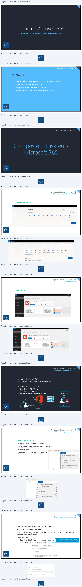
Page 5
Groupes et utilisateurs Microsoft 365
Création d’un utilisateur O365
• Différents rôles peuvent être
attribués à un nouvel utilisateur
• Utilisateur simple
• Administrateur général
• Administrateur personnalisé
• Délégation via les RBAC
(Role Based Access Control)
9
Groupes et utilisateurs Microsoft 365
Création d’un utilisateur O365
Administrateur personnalisé
Une stratégie de délégation doit être bien pensée.
10
Texte relevé dans les illustrations
[Rôles
Utilisateur (sans accès a
|
You can assign different roles to people in your organization. Learn
more about admin roles
©
Utilisateur (sans accès administrateur)
Cet
utilisateur
ne
disposera
pas
d'autorisations
sur
le
Centre
d'administration Office 365 ou
les tâches d'administration.
©
Administrateur général
Cet
utilisateur
aura
accès
à
toutes
les
fonctionnalités
du
centre
d'administration et pourra effectuer toutes les tâches dans le Centre
d'administration Office 365.
©
Administrateur personnalisé
Vous pouvez affecter un ou plusieurs rôles à cet utilisateur pour gérer
des domaines spécifiques d'Office 365.
©
Administrateur personnalisé
Vous pouvez affecter un ou plusieurs rôlesà cet utiisateur pour gérer
C1
Administrateur de facturation
CI
Administrateur du service Dynamics 365
C1
Approbateur des accès Customer Lockbox
D Administrateur Exchange
[Administrateurde mots de passe
CI
Administrateur
de licences
D Administrateur Skype Entreprise
D
| no
C1
Administrateur du service Power BI
D
Lecteurde rapports
CO
Administrateur
de services fédérés
C1
Administrateur SharePoint
D
Administrateur
descommunications Teams
C1
ingénieur du support des communications Teams
ER)
C1 Spécialiste du support des communications Teams
D
Administrateur de gestion des utilisateurs
Page 6
Groupes et utilisateurs Microsoft 365
Se connecter en PowerShell
1. Installer le module nécessaire MSOnline
2. Vérifier que le module est bien installé
11
Groupes et utilisateurs Microsoft 365
Se connecter en PowerShell
$acctName="<UPN of the account, such as belindan@litwareinc.onmicrosoft.com>"
$orgName="<for example, litwareinc for litwareinc.onmicrosoft.com>"
#Azure Active Directory
Connect-MsolService
#SharePoint Online
Connect-SPOService -Url https://$orgName-admin.sharepoint.com
#Skype for Business Online
Import-Module MicrosoftTeams
Connect-MicrosoftTeams
#Exchange Online
Import-Module ExchangeOnlineManagement
Connect-ExchangeOnline -UserPrincipalName $acctName -ShowProgress $true
#Security & Compliance Center
Connect-IPPSSession -UserPrincipalName $acctName
#Teams
Import-Module MicrosoftTeams
Connect-MicrosoftTeams
12
Texte relevé dans les illustrations
PS C:\WINDOWS\system32>[
Install-Module msonline
Le fournisseur NuGet est requis
pour continuer
PowerShellGet requiert
le fournisseur NuGet,
version 2.8.5.2@1 ou ultérieure,
pour interagir
avec
les référentiels
NuGet. Le fournisseur NuGet doit être disponible dans « C:\Program Files\PackageManagement \ProviderAssemblies » ou
Ic:
\Users\ygrohan\AppData\Local\PackageManagement\ProviderAssemblies
».
Vous pouvez également
installer
le fournisseur
NuGet en exécutant la commande « Install-PackageProvider -Name NuGet -MinimumVersion 2.8.5.201 -Force
». Voulez-vous
que PowerShellGet
installe
et
importe
le fournisseur
NuGet maintenant
?
[0] Oui
EN] Non
[S] Suspendre
[?] Aide (1a valeur par défaut est « O
»)
: 0
Répertoire : C:\Program Files\WindowsPowerShell\Modules
ModuleType Version
Name
ExportedCommands
:
Script
3.4.0
Pester
(Describe,
Context,
It,
Should.
en
Script
1.0.0.1
PonerShel1Get
{Install-Module, Find-Module,
Save-Module, Update-Module...}
Script
2.0.0
PSReadline
{Get-PSReadLinekeyHandler,
Set-PSReadLineKeyHandler,
Remov...
en
Page 7
Groupes et utilisateurs Microsoft 365
Se connecter en PowerShell
3. Se connecter à Microsoft 365
Cette fenêtre s'ouvre.
Renseigner nom d'utilisateur :
votreprénom@tenant.onmicrosoft.com
4. Vérifier si vous êtes connecté
13
Groupes et utilisateurs Microsoft 365
Création d’un utilisateur O365
• Créer un nouvel utilisateur
New-MsolUser -UserPrincipalName jpetit@eni-ecole.ovh -DisplayName Jean Petit -FirstName Jean -
LastName Petit -Password Pa55w.rd -ForceChangePassword $true -UsageLocation fr
• Supprimer un utilisateur, il sera gardé dans la corbeille Azure AD
pendant 30 jours
Remove-MsolUser –UserPrincipalName "jpetit@eni-ecole.ovh"
• Restaurer un utilisateur de la corbeille
Restore-MsolUser –UserPrincipalName "jpetit@eni-ecole.ovh"
14
Texte relevé dans les illustrations
BA Microsoft
Se connecter
|
ene
ene
Page 8
Administration Microsoft 365
Gestion des licences
15
Gestion des licences
Les fonctionnalités Exchange Online
• Boîtes aux lettres et archivage
• Calendrier
• Visualisation et modification de pièces jointes online
• Dossiers publics
• Stratégie de message et de conformité
• Antivirus et antispam
• Configuration du flux de messagerie
• Gestion d'appareils mobile
• Déploiement hybride
• Outils de migration
16
Texte relevé dans les illustrations
D
End
4 Exchange
E Online”
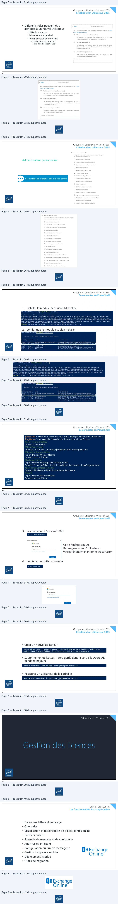
Page 9
Gestion des licences
Les plans Exchange Online
M365 Business
M365 Business
M365 Business
Fonctionnalité
Exchange Online
Exchange
Online Plan 1
Exchange
Online Plan 2
Basic
Standard
Premium
M365 E3
M365 E5
Boîte aux lettres
100 Go +
Archivage
50 Go + 50 Go
d’archivage
50 Go + 50 Go
d’archivage
50 Go + 50 Go
d’archivage
100 Go +
Archivage illimité
100 Go +
Archivage illimité
50 Go + 50
Go
d’archivage
illimité
Idem Business
Pack Office
Idem Business
Premium
Premium
Moins de
sécurité que
Ensemble des
fonctionnalités
Services
supplémentaires
M365 + VOIP
Business
Premium
inclus
Coût
3,40 € /m
6,70 € /m
4,20 € /m
10,50 € /m
16,90 € /m
31,50 € /m
53,70 € /m
17
Gestion des licences
Gestion des licences
• Vous pouvez :
• Ajouter une licence
• Remplacer une licence
• Nombre de licences restantes :
• Nombre de licences utilisées
• Nombre d'utilisateurs sans licence
Vous devez sélectionner obligatoirement un emplacement !
18
Texte relevé dans les illustrations
EE
DE
EE DE d
ae
.
x
ete
Ts To
x
OH
ghee
RBS Voze
Lei
Licences de produits
A REMARQUE: une fois es nouveou utilisateurs configurés pour utiliser l'offre
Tact
HE
ova
ft
Forms
(pian
LI
Désactivé
pee
tear
ff
LI
Désactivé
3
menaces
sur
it
1
Detecting
ft
St
Li
Désactivé
=
tor
Otice
BD
oécé
én v
wh
i
HET
eae
| Fonctionnalité Exchange Online | Exchange Online Plan 1 | Exchange Online Plan 2 | M365 Business Basic | M365 Business Standard | M365 Business Premium | M365 E3 | M365 E5 |
| Boîteaux lettres | 50 Go + 50 Go d’archivage | 100 Go + Archivage illimité | 50 Go + 50 Go d’archivage | 50 Go + 50 Go d’archivage | 50 Go + 50 Go d’archivage | 100 Go + Archivage illimité | 100 Go + Archivage illimité |
| Pack Office | Idem Business Premium | Idem Business Premium | |||||
| Services supplémentaires | Moins de sécurité que Business Premium | Ensemble des fonctionnalités M365 + VOIP inclus | |||||
| Coût | 3,40 € /m | 6,70 € /m | 4,20 € /m | 10,50 € /m | 16,90 € /m | 31,50 € /m | 53,70 € /m |
Page 10
Gestion des licences
La gestion Exchange Online
• Vous pouvez gérer Exchange Online
• Dans le menu Centres d'administration / Exchange Online
• En PowerShell
• Pour vous connecter en PowerShell à Exchange Online
Find-module ExchangeOnlineManagement | install-module
Connect-ExchangeOnline
19
Gestion des licences
Gestion des licences
• Vérifier son nombre de licences totales et consommées
L’accountSkuId est nécessaire pour
toutes les manipulations de licences.
• Assigner une licence à un utilisateur
Set-MsolUserLicense –UserPrincipalName "jpetit@eni-ecole.ovh" –AddLicenses "Adatum201812345:ENTERPRISEPREMIUM"
• Enlever une licence à un utilisateur
Set-MsolUserLicense –UserPrincipalName "jpetit@eni-ecole.ovh" –RemoveLicenses "Adatum201812345:ENTERPRISEPREMIUM"
• Assigner une licence à tous les comptables suisses
Get-MsolUser -all -Department Account -UsageLocation CH -UnlicensedUsersOnly | ForEach-
Object {Set-MsolUserLicense -UserPrincipalName $PSITEM.UserPrincipalName -AddLicenses
" Adatum201812345:ENTERPRISEPREMIUM "}
20
Texte relevé dans les illustrations
Exch
Gis
Exchange
ni
Online
PS E:\> Get-MsolAccountSku
Adatum201812345 :ENTERPRISEPREMIUM
25
0
14
Page 11
Administration Microsoft 365
Destinataires et permissions
Exchange Online
21
Destinataires et permissions Exchange Online
La console Exchange Online ECP (Exchange Control Panel)
22
Page 12
Destinataires et permissions Exchange Online
Les différents types de destinataires
lucie@eni-ecole.ovh
Boîtes aux lettres Utilisateur
• Envoi / Réception de mails
• Attribution de stratégies
• Gestion des restrictions
• Gestion des redirections
• Délégations
23
Destinataires et permissions Exchange Online
Les fonctionnalités d’une boîte aux lettres
Options de remise
• Ces options sont applicables à tous les types de destinataires
24
Texte relevé dans les illustrations
Lucie
FERRIER
.
-
FERRIER Lucie
terrier
[Werier@eniecotwovh
2
en
Adresse
de transfert
Transférerle courrierau destinataire suivant. En savoir plus
Parcourir.
aux
lettres
Limite de
destinataire
Nombre maximal
de destinataires
500
en
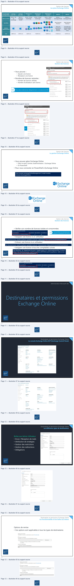
Page 13
Destinataires et permissions Exchange Online
Les fonctionnalités d’une boîte aux lettres
Restriction de taille des messages et de remise de message.
25
Destinataires et permissions Exchange Online
Les fonctionnalités d’une boîte aux lettres
Les adresses de courrier
• Éviter de les modifier ici
Les Infos courrier apparaissent lors
de la création d'un nouveau message
26
Texte relevé dans les illustrations
estrictions de remise de messages
© Tous les expéditeurs
rictions
de
taille
d
ages
O Uniquement les expéditeurs de a iste
suivante
restrictions detaille des messages
juement
les
expéditeurs de la
liste suivante
NOM DAFFICHAGE
A
Définissez une taille maximale pour les messages échangés avec cette boîte aux lettres. En
Messages envoyés
Taille maximale du message (Ko)
35840
Messages recus
C1 Bxiger tauthentfcation de tous les expéditeurs
Taille maximale du message (Ko)
©
haces ewesnens
36864
O Bpéditeurs dans la liste suivante
NOM DAFFICHAGE
à
ene
» adresse de courrier
+4-
foncuonnalites de
poke
TPE
ADRESSE DE COURRIER
tiisat
pouvez
créer
une
info
courrier
àafich
M
f
4
errier@eniecole.ovh
:
Info courrier
% FERRIER
Lucie X : “je suis parti faire une course je reviens dans
1 heure
a
À
| [FERRIER Lucie
ent
ca
ce
=
Envoyer
Objet
Page 14
Destinataires et permissions Exchange Online
Les fonctionnalités d’une boîte aux lettres
Gestion IMAP4 et POP3
• Cela veut dire que vous autorisez ou non l'accès à vos utilisateurs
par n'importe quel programme prend en charge les protocoles
POP et IMAP
• Type : Outlook, Outlook Express, Thunderbird, Eudora
• Si vous utilisez ces protocoles, vous ne pourrez plus accéder à :
• Vos calendriers
• La gestion des contacts
• …
• Dans le cadre de messagerie M365 ou Exchange, peu d’intérêt
d’utiliser ces protocoles
27
Destinataires et permissions Exchange Online
Les fonctionnalités d’une boîte aux lettres
Quota
• Contrairement à un Exchange sur site, la gestion des quotas se fait
uniquement en PowerShell
Get-Mailbox jpetit@eni-ecole.ovh | fl *quota*
• Paramétrer un avertissement à 49 Gb, un arrêt des envois de courriel à
49,5 Gb et un arrêt des envois/réceptions à 50 Gb
Set-Mailbox –Identity "Jean Petit" –IssueWarningQuota 49gb –ProhibitSendQuota 49.5gb
–ProhibitSendReceiveQuota 50gb –UseDatabaseQuotaDefaults $false
28
Texte relevé dans les illustrations
ene
PS C:\WINDOWS\system32>
ProhibitSendQuota
: 99 GB (106,300,440,576 bytes)
ProhibitSendReceiveQuota
: 100 GB (107,374,182,400 bytes)
RecoverableItemsQuota
:
30 GB
(32,212,254,720 bytes)
RecoverableltemsWarningQuota
:
20 GB
(21,474,836,480 bytes)
CalendarLoggingQuota
: 6 GB (6,442,450,944 bytes)
UseDatabaseQuotaDefaults
: False
IssueWarningQuota
: 98 GB (105,226,698,752 bytes)
RulesQuota
:
256 KB (262,144
bytes)
ArchiveQuota
: 100 GB (107,374,182,400 bytes)
ArchiveWarningQuota
:
90 GB
(96,636,764,160 bytes)
= Fo
Page 15
Destinataires et permissions Exchange Online
Les fonctionnalités d’une boîte aux lettres
• Durée de rétention des éléments supprimés pour une boîte aux lettres
Get-Mailbox jpetit@eni-ecole.ovh | fl *retain*
• Paramétrer la durée de rétention des éléments supprimés pour 30 jours
Set-Mailbox –Identity "Jean Petit" –RetainDeletedItemsFor 30
• Lister les boîtes aux lettres supprimées présentes dans la corbeille
Get-Mailbox -SoftDeletedMailbox
29
Destinataires et permissions Exchange Online
Les différents types de destinataires
• Boîte aux lettres de ressources
• Boîte aux lettres de salle
• Permet de gérer les demandes de réservation d'un emplacement physique
New-Mailbox –Name "votre nom de salle" –DiplayName "votre nom de salle" -Room
• Boîte aux lettres d'équipement
• Permet de gérer les demandes de réservation d'un matériel physique
New-Mailbox –Name "vidéoproj_1" –DiplayName "vidéoproj_1" -equipment
30
Texte relevé dans les illustrations
PS C:\WINDOWS\system32>
RetainDeletedItemsUntilBackup
:
False
RetainDeletedItemsFor
: 14.00:00:00
en
en
Page 16
Destinataires et permissions Exchange Online
Les différents types de destinataires
Boîte aux lettres
de ressource
Option
d'invitation
• Demande de réunion
Boîte aux
lettres de salle
31
Destinataires et permissions Exchange Online
Les différents types de destinataires
• Boîte aux lettres partagées
• Plusieurs utilisateurs peuvent accéder à une Boîte aux
lettres partagée
• Gain de licence (attention à bien respecter les CGU…)
• Possibilité de fixer un mot de passe (accès
smartphone)
• Attention aux délégations
• « Accès total » permet aux utilisateurs de voir les
messages
• « Envoyer en tant que » permet d'envoyer des messages
en tant que cette boîte aux lettres
• Attention à la gestion des mails (éléments envoyés)
New-Mailbox –Shared –Name "support" –DiplayName "support" –Alias "support" | Set-Mailbox –GrantSendOnBehalfTo
jpetit@eni-ecole.ovh | Add-MailboxPermission –User "Jean Petit" –AccesRights FullAccess –InheritanceType All
32
Texte relevé dans les illustrations
“Envoyer Iignorer
Q Joindre
@ Ajouter uneréunion
Skype SymboleV … Catégorser
iy
Détails
Micreais\
Contacts
a= 3 |
Planifier
ven. 23/1/2018
B)
1530
+
Participants
&
ve
@)
Le
~
3.10
x
-
.
@ TRAMELL Catherine
x
© vidéoprojecteur 3:10
x
eni
BO|crsyK eA
REY
=
support
]
support
eni-ecoleovh
]
+-
Lucie Ferrier
VIDOR Denis
ene Lo
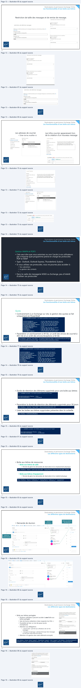
Page 17
Destinataires et permissions Exchange Online
Les différents types de destinataires
• Les contacts
• C'est un type de boîte aux lettres avec une adresse de messagerie externe
• Cela permet d'enregistrer, des fournisseurs par exemple, dans les carnets
d'adresses
• Les utilisateurs de messagerie
• Tout comme les contacts, ils ont une adresse de messagerie externe
• Contrairement aux contacts, ils peuvent s'authentifier sur une session (par
exemple, une société de service)
33
Destinataires et permissions Exchange Online
Les fonctionnalités d’une boîte aux lettres
• Conservation pour litige
• Désactivé par défaut
• Liée à un aspect juridique, elle permet de conserver les éléments d'une
boîte aux lettres et enregistre les modifications apportées à ces éléments
• Archivage
• Permet d'activer une boîte aux lettres d'archive
34
Texte relevé dans les illustrations
+
PB
wm
JAucun
*Quota d'archivage (Go
100
Page 18
Destinataires et permissions Exchange Online
Résumé : les différents types de destinataires
Boîte aux lettres d’utilisateur
Fonction
Boîte aux lettres Exchange Online
Boîte aux lettres créée avec tout compte Microsoft 365 ayant une licence.
Boîte aux lettres de ressource
Boîte aux lettres de salle ou d’équipement qui permet de gérer un calendrier.
Boîte aux lettres partagées
Plusieurs utilisateurs peuvent accéder à une Boîte aux lettres (une seule copie du mail).
Boîte aux lettres de contact
C'est un type de boîte aux lettres avec une adresse de messagerie externe (ex : pour un fournisseur).
Boîte aux lettres d’utilisateurs de
messagerie
C'est un type de boîte aux lettres avec une adresse de messagerie externe mais contrairement aux
contacts, ils peuvent s'authentifier sur une session (par exemple, une société de service).
Boîte aux lettres de groupe
Fonction
Liste de distribution ou groupe
Outlook
Permet d'envoyer des messages à un groupe de destinataires (plusieurs copies du mails).
Liste de distribution dynamique
Comme la liste de distribution, permet d'envoyer des messages à un groupe de destinataires
(plusieurs copies du mails) mais ce groupe est créé suivant une requête LDAP.
Groupe de sécurité à extension de
courrier
Il permet d'accorder des accès à des ressources tout en ayant une adresse de messagerie.
35
Administration Microsoft 365
Les groupes
36
Texte relevé dans les illustrations
ee
po
Po
PO
Po
[|
es
fFLd
Pe
>
End
| Boîte aux lettres d’utilisateur | Fonction |
| Boîte aux lettres Exchange Online | Boîte aux lettres créée avec tout compte Microsoft 365 ayant une licence. |
| Boîte aux lettres de ressource | Boîte aux lettres de salle ou d’équipement qui permet de gérer un calendrier. |
| Boîte aux lettres partagées | Plusieurs utilisateurs peuvent accéder à une Boîte aux lettres (une seule copie du mail). |
| Boîte aux lettres de contact | C'est un type de boîte aux lettres avec une adresse de messagerie externe (ex : pour un fournisseur). |
| Boîte aux lettres d’utilisateurs de messagerie | C'est un type de boîte aux lettres avec une adresse de messagerie externe mais contrairement aux contacts, ils peuvent s'authentifier sur une session (par exemple, une société de service). |
| Boîte aux lettres de groupe | Fonction |
| Liste de distribution ou groupe Outlook | Permet d'envoyer des messages à un groupe de destinataires (plusieurs copies du mails). |
| Liste de distribution dynamique | Comme la liste de distribution, permet d'envoyer des messages à un groupe de destinataires (plusieurs copies du mails) mais ce groupe est créé suivant une requête LDAP. |
| Groupe de sécurité à extension de courrier | Il permet d'accorder des accès à des ressources tout en ayant une adresse de messagerie. |
Page 19
Gestion des licences
Les différents groupes dans Microsoft 365
• Groupe Microsoft 365
• Collaboration entre utilisateurs
• Gestion dynamique possible par une règle LDAP Azure AD
• Boîte de réception Outlook partagée
• Un calendrier partagé
• Une bibliothèque de documents SharePoint
• Un planificateur
• Un bloc-notes OneNote
• Groupe de distribution
• Envoi de mail à un groupe de personnes
• Groupe de sécurité
• Gestion de droit sur des ressources SharePoint
37
Les groupes
Les différents types de groupes
La création d’un groupe Microsoft 365 créé un site SharePoint
38
Texte relevé dans les illustrations
ene
©
Microsoft 365 (recommandé)
O distribution
O sécurité
Microsoft 365.
a
NES
Page 20
Les groupes
Les différents types de groupes
• Groupe Microsoft 365
39
Les groupes
Les différents types de groupes
• Liste de distribution
40
Texte relevé dans les illustrations
Groupe
Groupe1
Groupe Public + 1 propriétaire
1 membre
Paramètres généraux
Groupe Public
»
1 propriétaire
+
1 membre
i
Autoriser
les
expéiteursextemes
à envoyer un courir
à ce grou
Ü
PE
ve
groupe
Envoyer des copies des conversations et événement de groupe aux
Général
Membres
Paramètres
Microsoft Teams
membres
du groupe
=~
Général
Membres
Paramètres
Microsoft Teams
—
Masquer dans a liste d'adresses globale de mon organisation
informations de base
Nom
Propriétaires (D
Confidentialité
Description
Maxime test
Orne
Groupet
© ravie
Afficher
tout et gérer les propriétaires
Gestion des remises
Principal
Membres (D)
Refuser les messages provenant de: Aucun expéditeur
Alas
Powershell User
Gérer es délégués
Afficher tout etgérer les membres
eni
06/05/2001, 1023 PM
Options de l'expéditeur
Par défaut, saules es personnes au sein de votre organisation peuvent envoyer des
messages à ce groupe. Vous pouvez également autoriser les personnes extemnes à
l'organisation à envoyer des invitations à ce groupe.
Groupes
fautoriser
isation
P
LD_Compte
© Nauorseraueies messes de membresau sein demon organisa
Groupe Liste de distrib
© autoriser les messages en provenance de contacts interes et externes à mon
x
organisation
Microsoft365 Liste de distibution
Sécurité
à extent
8
Général
Membres
Paramètres
Expéditeur spécifiés
Pour imiter les utilisateurs autorisés à envoyer des messages au groupe, ajoutez ci
cp
a
dessous les expéditeur spécifiés Seuls ces utilisateursou groupes seront autorisésà
méga
nr
“envoyer un courrier
au groupe.
Rejoindre le groupe
©
1comptes
Informations de base
Recherchez par nom ou par adresse de courrier
Nom
© ouvert
Compe
Seuls les propriétaires du groupe peuvent ajouter des membres.
Toutes les
O approbation du propriétaire
Adresses e-mail
Tout le monde peut demander à rejoindre ce groupe et les propriétaires doivent
Principal
approuver la demande.
Awe
Quittez le groupe
:
© owert
A
Tout
lemonde peut quitter ce groupe sans approbation
du propriétaire
du
enti
Date de création
we
peur
au
F
°
cu
proprétare
c
ou
groupe
mes
O Ferme
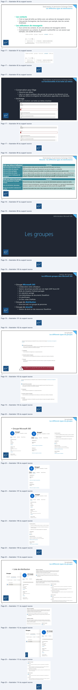
Page 21
Les groupes
Les différents types de groupes
• Liste de distribution dynamique
41
Administration Microsoft 365
Administrer Exchange Online
42
Texte relevé dans les illustrations
Options de l'expéditeur
test
messages à ce groupe. Vous pouvez également autoriser les personnes externes à
organisation à envoyer des invitations à ce groupe.
O Nautorser que les messages de membres au sein de mon organisation
<i
aac
Pour limiter les utiisateurs autorisés à envoyer des messages au groupe, ajouterci
a
L
|
Page 22
Administrer Exchange Online
Les domaines acceptés
• Il s'agit d'un domaine dans le sens DNS.
• Il permet aux utilisateurs de ce domaine d'envoyer et recevoir
des messages pour ce domaine DNS.
• Il en existe 2 types :
• Faisant autorité : c'est un domaine géré par votre office 365.
• Relais interne : le courrier peut être relayé par vos serveurs, mais vous
aurez alors besoin des connecteurs de réception et d'envoi.
43
Administrer Exchange Online
Le suivi des messages
• En tant qu'administrateur, il peut vous être demandé d'effectuer
un suivi des messages
44
Texte relevé dans les illustrations
ene
Rechercher les messages qui ont été envoyés :
a
mn
Par ces
personnes
Résultats de recherche de suivi de message
pom
ees conter
sn
L
ue
aa
=
mt
tpmsonecuot
‘
Dans cette plage de temps (UTC+01:00) (
Curseur
2 derniers) jours)
1
2
wimiroso.
holy @adatunz20181234
x
count
ink
90
30
15
10
7
2
tjour
“12h
6h
0
V
Autres
options
de recherche
DRE
meer
___—
Dee
© rapport
de synthèse
Accès immédiat
en igne
©
2
© Rapport de synthèse amélioré
Fichier
CSV téléchargeable
eni
uniquement
—
©
Rapport détaillé
Fichier
CSV téléchargeable
uniquement
Page 23
Administrer Exchange Online
Les règles de transport
• Vous pouvez implémenter des stratégies et de la conformité de
messagerie en appliquant des règles de transport aux messages
• Les règles de transport :
• Limitent les flux de messages
• Modifient le contenu des messages en transit
• Empêchent les utilisateurs spécifiés d'échanger des courriers électroniques
avec d'autres utilisateurs définis
• Bloquent tout contenu inapproprié entrant ou sortant
• Peuvent contourner les règles de filtrage antispam
• Permettent de suivre ou journaliser les messages échangés avec certaines
personnes
• Redirigent les messages entrants ou sortants pour les examiner avant
leur remise
45
Administrer Exchange Online
Les règles de transport
• Leurs caractéristiques :
• Appliquées par les serveurs de boîte aux lettres
• Appliquer les exigences de conformité
• Leurs configurations :
• Conditions (les attributs, en-têtes, destinataires, expéditeurs ou autres
parties du message électronique)
• Actions
• Exceptions
46
Texte relevé dans les illustrations
N
>
Page 24
Administrer Exchange Online
Les règles de transport
• Les conditions et exceptions peuvent se chevaucher et ainsi créer
des règles que vous ne souhaitez pas (modifier ou supprimer des
messages)
• La priorité et l’ordre des règles sont capitaux à la bonne application
de vos contraintes de conformité
• La règle en haut de liste est traitée en premier (priorité 0)
• Utiliser les expressions régulières pour vérifier le contenu des
messages
• Recherche d’un numéro de téléphone du type « \d\d\d(-|.)\d\d\d\d »
47
Administrer Exchange Online
Les connecteurs
• Par défaut, aucun connecteur ne sera à créer, votre messagerie
est fonctionnelle.
• Les connecteurs auront de multiples fonctions :
• Faire le lien avec un serveur Exchange On Premise
• Autoriser des sites web, copieurs, logiciels à envoyer de mails à partir de
votre entreprise
• D’appliquer un comportement différent en fonction du ou des domaines
cibles (application de chiffrement par exemple)
• Accepter du courrier entrant d’une organisation partenaire
48
Texte relevé dans les illustrations
N
>
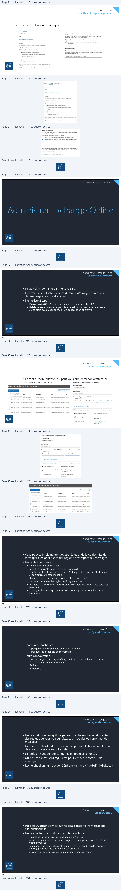
Page 25
Administrer Exchange Online
Les connecteurs
• L’une des utilisations les plus
communes est d’utiliser un relais SMTP
en interne :
Réseau de votre organisation
Vos boîtes aux
lettres Office 365
Imprimante multifonction ou
périphérique (par exemple,
numérisation vers la messagerie)
Internet
Service Web hébergé localement
(par exemple, un service de paie)
Authentification à l’aide des
informations d’identification
De boîte aux lettres Office 365
Site Web hébergé localement (par
exemple, un site intranet des RH)
Message envoyé à
Smtp.office365.com
des destinataires
sur le port 587
externes
Destinataires
extérieurs à votre
• Simplifier la configuration des
équipements (authentification non
obligatoire en interne)
• Limiter le nombre de machines pouvant
exploiter le protocole SMTP et ainsi
limiter la surface d’attaque
• Établir une configuration sécurisée
entre votre relais SMTP interne et
Microsoft 365 (pas toujours possible sur
les équipements)
• Limiter le nombre d’entrées dans le SPF
société
49
Administration Microsoft 365
Connectivité des clients
de messagerie
50
Lecture continue du texte source
Administrer Exchange Online
Les connecteurs
• L’une des utilisations les plus
communes est d’utiliser un relais SMTP
en interne :
• Simplifier la configuration des
équipements (authentification non
obligatoire en interne) Réseau de votre organisation Vos boîtes aux
multifonction ou • Limiter le nombre de machines pouvant Imprimantepériphérique lettres Office 365 (par exemple,
numérisation vers la messagerie) exploiter le protocole SMTP et ainsi
Internet Web hébergé localement
Authentification à l’aide des limiter la surface d’attaque Service(par exemple, un service de paie) informations d’identification
• Établir une configuration sécurisée De boîte aux lettres Office 365
Message envoyé à entre votre relais SMTP interne et Siteexemple,Web unhébergésite intranetlocalementdes RH)(par Smtp.office365.com des destinataires
sur le port 587 externes Microsoft 365 (pas toujours possible sur
les équipements)
• Limiter le nombre d’entrées dans le SPF extérieursDestinatairesà votre
société
49
Administration Microsoft 365
Connectivité des clients
de messagerie
50Texte relevé dans les illustrations
Ces . —_
N
Page 26
Connectivité des clients de messagerie
Prérequis pour l’infrastructure réseau
• Ports et protocoles
• Assurez-vous que tous les ports sont bien ouverts
Le port 25 (SMTP) est très souvent bloqué par les FAI (Fournisseur d’Accès Internet).
Protocole
Port non sécurisé
Port TLS/SSL
HTTP
80
443
POP3
110
995
IMAP4
143
993
MAPI / HTTPS
443
ActiveSync / HTTPS
443
SMTP
25
Soumission client SMTP
2525
587 / 465
51
Connectivité des clients de messagerie
Quelles connexions choisir ?
• Les connexions IMAP et POP sont de plus en plus rarement
utilisées avec Microsoft 365 mais restent possibles.
• Les clients Outlook utiliseront MAPI/HTTPS.
• Les clients mobiles utiliseront ActiveSync.
52
Texte relevé dans les illustrations
RE
ee
>
End
| Protocole | Port non sécurisé | Port TLS/SSL |
| HTTP | 80 | 443 |
| POP3 | 110 | 995 |
| IMAP4 | 143 | 993 |
| MAPI / HTTPS | 443 | |
| ActiveSync / HTTPS | 443 | |
| SMTP | 25 | |
| Soumission client SMTP | 2525 | 587 / 465 |
Page 27
Connectivité des clients de messagerie
Autodiscover
• Découverte automatique du serveur de messagerie
• « Tester la configuration automatique de la messagerie » permet
de valider vos paramètres Autodiscover pour la configuration
automatique des profils.
• Vous pouvez aussi utiliser le Remote Connectivity Analyser Tool.
• Il doit exister des enregistrements dans votre zone DNS publique
pour les clients externes.
Pour Outlook
Enregistrement DNS
Valeur
CNAME
Alias : Autodiscover
Cible : autodiscover.outlook.com
En cas d'utilisation de AD
Alias : Autodiscover.service.eni-ecole.ovh
FS (optionnel)
Cible : autodiscover.outlook.com
CNAME
53
Connectivité des clients de messagerie
Rappel Autodiscover
• Processus de la découverte automatique
• L'utilisateur entre son adresse mail à l'ouverture d'Outlook
• Outlook cherche puis se connecte au serveur de messagerie de l’utilisateur
• Le client envoie son adresse SMTP pour avoir les options de configuration
de cette adresse
• Un fichier .xml est téléchargé par le client avec les paramètres du serveur
• Outlook se connecte au serveur Exchange Online dans Office 365 et peut
recevoir ses mails
SMTP
Internet
web.xml
Micheline@campus-eni.fr
MAPI/HTTPS
Serveur de
messagerie
de Micheline
54
Texte relevé dans les illustrations
es
à
CA
=
| Enregistrement DNS | Valeur |
| CNAME | Alias : Autodiscover Cible : autodiscover.outlook.com |
| En cas d'utilisation de AD FS (optionnel) CNAME | Alias : Autodiscover.service.eni-ecole.ovh Cible : autodiscover.outlook.com |
| Micheline@campus-eni.fr | |
| Micheline@campus-eni.fr |
Page 28
Connectivité des clients de messagerie
Les fichiers Outlook .pst, .ost et spscoll.dat
• .pst « Personal Storage Table » : fichier contenant les informations
pour un compte POP3 par exemple.
• .ost « Offline Storage Table » : fichier contenant vos données
lorsque vous êtes hors connexion pour les comptes IMAP4 et
Exchange.
• .nst est l’extension des fichiers GST « Group Storage Table » :
fichier contenant les conversations de groupe.
• spscoll.dat « Outlook Social Connector » : fichier qui contient les
adresses mail suggérées lors de l’écriture d’une adresse (ouverture
possible avec notepad).
55
Connectivité des clients de messagerie
Réparer les fichiers .pst, .nst et .ost
• Utilisation de l’outil natif au système pour les .pst : scanpst.exe
• Supprimer le .ost afin qu’il soit régénéré
• Utilisation d’outil tiers comme :
56
Texte relevé dans les illustrations
eni
SysTools”
Ver
Stellar
7
OST TO PST
@
CONVERTER
A
syste
ene
OST Recovery
+
ne
oes
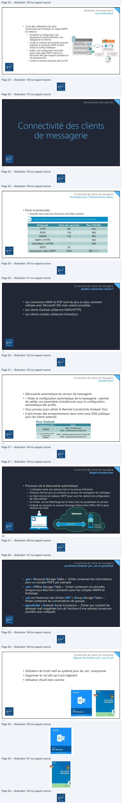
Page 29
Administration Microsoft 365
Gestion des mobiles
57
Gestion des mobiles
EMM (Enterprise Managing Mobile)
• Gestion des appareils mobiles de l’entreprise
• Représente une suite de service qui permet de gérer les appareils
mobiles et la sécurité des données
• Différents acteurs du marché :
58
Texte relevé dans les illustrations
DA mobileiron
‘5:BlackBerry
vant
airwatch
by vmware
Page 30
Gestion des mobiles
Managing Mobile Devices
• MDM
• Ce service représente 16,29 milliards de dollars de CA en 2020.
• Module de gestion des appareils mobiles.
• Mobile
• Tablette
• Smartphone
• Permet de gérer :
• Les applications
• Le réseau
• Les données
• La sécurité
59
Gestion des mobiles
BYOD, CYOD et COPE
• BYOD (Bring Your Own Device)
• Les utilisateurs peuvent utiliser les matériels personnels pour le travail.
• Permet une meilleure productivité puisqu’ils connaissent déjà le fonctionnement.
• Diminution des coûts pour l’entreprise (possibilité de prise en charge de tout ou
partie des coûts d’achat et de maintenance).
• CYOD (Choose Your Own Device)
• Les utilisateurs peuvent choisir un modèle parmi une liste préétablie par l’entreprise.
• Permet d’éviter un parc de matériels trop hétérogène.
• COPE (Corporate Owned Personally Enabled)
• Les utilisateurs utilisent le matériel choisi par l’entreprise, mais ils peuvent l’utiliser à
des fins personnelles.
• Ils peuvent installer les applications qu’ils veulent, mais la gestion reste à l’entreprise.
60
Texte relevé dans les illustrations
N
>
Page 31
Gestion des mobiles
Managing Mobile Devices dans Microsoft 365
• MDM pour Microsoft 365 permet de gérer des appareils mobiles.
• Windows phone
• Android
• iPhone et iPad
• Pour une gestion avancée des appareils mobiles pour un domaine
personnalisé, des enregistrements DNS sont nécessaires.
Enregistrement DNS
Valeur
CNAME
Hôte : EnterpriseEnrollment
Adresse : EnterpriseEnrollment.manage.microsoft.com
CNAME
Hôte : EnterpriseRegistration
Adresse : EnterpriseRegistration.windows.net
61
Gestion des mobiles
Managing Mobile Devices dans Microsoft 365
• Activer la gestion mobile
https://admin.microsoft.com/EAdmin/Device/IntuneInventory.aspx
62
Texte relevé dans les illustrations
eni
G
&
https//adminmicrosoft.com/EAdmin/Device/intunelnventory.aspx
Configurer la gestiondes appareils mobiles pour Office 365
eni
End
Allons-y @
| Enregistrement DNS | Valeur |
| CNAME | Hôte : EnterpriseEnrollment Adresse : EnterpriseEnrollment.manage.microsoft.com |
| CNAME | Hôte : EnterpriseRegistration Adresse : EnterpriseRegistration.windows.net |
Page 32
Gestion des mobiles
Managing Mobile Devices
• Une fois activé, vous pouvez créer une stratégie
63
Gestion des mobiles
Managing Mobile Devices
• Options de stratégie
• Empêcher les mots de
passe simples
• Longueur minimale de
mot de passe
• Nombre d'échecs avant
effacement de l'appareil
• Temps d'inactivité avant
verrouillage
• Expiration du mot de
passe et historique
• Exiger le chiffrement de
l'appareil
• Bloquer ou autoriser
l'accès à un appareil
64
Texte relevé dans les illustrations
EE
Centre de sécurité et conformité Office 365
’
En
savoir plus
Ci
à propos des appareils et scénarios pris en charge
À Alertes
Gérer les paramètres d'accès
aux
appareils
à l'échelle
del'organisation
[& Protection contre la perte
A
Ds
Quelle condition requise voulez-vous appliquer aux appareils ?
.
@ Nommez
votre strategie
:
Z
.
a
eni
as
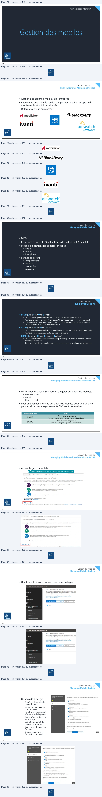
Page 33
Gestion des mobiles
Managing Mobile Devices
• Options de stratégie
• Bloquer la synchronisation
de photos
• Bloquer la capture d'écran
• Bloquer ou gérer l'accès
au magasin d'application
• Bloquer la connexion au
stockage amovible
65
Gestion des mobiles
Managing Mobile Devices
• Appliquez la stratégie au groupe de sécurité
66
Texte relevé dans les illustrations
[1 Exiger le chiffrement des sauvegardes
[1 Bloquer la sauvegarde sur le cloud
[1 Bloquer la synchronisation de documents
EZ Bloquer la synchronisation de photos
Bloquer la capture d'écran
[1 Bloquer la vidéoconférence sur les appareils
[1 Bloquer l'envoi de données de diagnostic à partir des appareils
4 Demanderun mot de passe lors de l'accès au magasin d'applications
EZ Bloquer la connexion au stockage amovible
[1 Bloquer la connexion Bluetooth
Les paramètres ci-dessus seront configurés sur les appareils des utilisateurs et les violations seront signalées
ent
Sélectionner un groupe
Voulez-vous appliquer cette stratégie maintenant ?
Choisissez le, la ou les groupes à ajouter dans la liste ci-dessous.
Filtrer par Alias
v
© ow
spécialement pour cette stratégie.
2
Groupes (5)
[1 Alas
Nom complet
0:
:
[1 Managers
Managers
Non
Marketi
Marketi
Nous allons enregistrer cette stratégie, mais celle-ci ne sera pas appliquée aux appareils au sein
o
9
°
de votre organisation.
on
m
(ail 1
[CL
Development
Development
Page 34
Administration Microsoft 365
Azure AD
67
Azure AD
Présentation
• C'est un service cloud de gestion des identités et des annuaires
• Il est utilisé par Microsoft 365 pour identifier les utilisateurs
• Vous pourrez :
• Gérer des utilisateurs
• Gérer des appareils
• Vous connecter à un domaine Active Directory local
68
Texte relevé dans les illustrations
N
>
Page 35
Azure AD
Authentification
• Indépendant de votre Active Directory local
• Nécessite 2 mots de passe gérés dans 2 annuaires différents :
• 1 compte Active directory local
• 1 compte Azure AD dans Office 365
Galettes.lcl
Serveur AD
Serveur DNS
Azure AD
69
Azure AD
Azure AD Connect
• Azure AD Connect va permettre de faire une synchronisation
entre Microsoft 365 et votre AD DS On-Premise
• Tous les attributs utilisateurs, groupes ou contacts modifiés,
désactivés ou supprimés dans votre AD sur site seront modifiés
dans Microsoft 365
• Vous pouvez filtrer sur votre forêt, un domaine, une OU, un
attribut…
70
Texte relevé dans les illustrations
A
= À
CA
End
>
End
Page 36
Azure AD
Azure AD Connect
Après avoir installé Azure AD Connect, les utilisateurs de votre AD local
sont synchronisés avec Azure AD dans le cloud.
Serveur AD
Serveur DNS
Azure AD
Connect
Azure AD
Galettes.lcl
71
Azure AD
Authentification Cloud avec mot de passe hashé
Azure AD Connect récupère les mots de passe hashés puis les
envoie dans Azure AD en SHA256 afin de les synchroniser. Un
utilisateur peut ainsi s’identifier dans le cloud avec son mot de
passe AD local
Avec la méthode d’authentification Cloud, la synchronisation
ne se fait que de l’AD local vers Azure AD Office 365.
Serveur AD
Serveur DNS
Azure AD
Connect
Mot de passe hashé en SHA256
Azure AD
Galettes.lcl
72
Lecture continue du texte source
Azure AD
Azure AD Connect
Après avoir installé Azure AD Connect, les utilisateurs de votre AD local
sont synchronisés avec Azure AD dans le cloud.
Serveur AD
Azure AD Serveur DNS
Connect
Azure AD Galettes.lcl
71
Azure AD
Authentification Cloud avec mot de passe hashé
Azure AD Connect récupère les mots de passe hashés puis les
envoie dans Azure AD en SHA256 afin de les synchroniser. Un
utilisateur peut ainsi s’identifier dans le cloud avec son mot de
passe AD local
Avec la méthode d’authentification Cloud, la synchronisation
ne se fait que de l’AD local vers Azure AD Office 365.
Azure AD ServeurServeurDNSAD
Connect
Mot de passe hashé en SHA256
Azure AD Galettes.lcl
72Texte relevé dans les illustrations
on
a
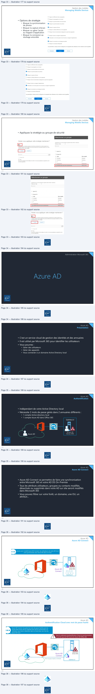
Page 37
Azure AD
Azure AD Writeback (réécriture du mot de passe)
Avec Azure Ad Writeback, la synchronisation se fait dans les deux sens.
Nécessite Azure AD premium P1 ou Business Premium.
Serveur AD
Serveur DNS
Azure AD
Connect
Mot de passe hashé en SHA256
Azure AD
Galettes.lcl
73
Azure AD
Azure AD Connect
• La synchronisation entre votre Office 365 et votre AD DS se
fait toutes les 30 minutes par défaut
74
Lecture continue du texte source
Azure AD
Azure AD Writeback (réécriture du mot de passe)
Avec Azure Ad Writeback, la synchronisation se fait dans les deux sens.
Nécessite Azure AD premium P1 ou Business Premium.
Azure AD ServeurServeurDNSAD
Connect
Mot de passe hashé en SHA256
Azure AD Galettes.lcl
73
Azure AD
Azure AD Connect
• La synchronisation entre votre Office 365 et votre AD DS se
fait toutes les 30 minutes par défaut
74Texte relevé dans les illustrations
D
—_.
PE
oS
S
ene
PS C:\Windows\system32>
Import-Module ADsync
PS Cz\Windows\system32>
Get-ADSyncScheduler
Al lowedSyncCycle Interval
:
00:30:00
CurrentlyEffectiveSyncCyclelnterval
:
00:30:00
CustonizedSyncCyclelnterval
B
HextSyncCyclePolicyType
:
Delta
NextSyncCycleStart Time InUTC
=
21/11/2018
09:37:17
Purgefunkistory Interval
>
7.00:00:00
SyncCycleEnabled
:
True
jaintenanceEnab led
: True
StagingModeEnab led
:
False
SchedulerSuspended
:
False
SyncCycleInProgress
:
False
ene
Page 38
Azure AD
Azure AD Connect
1. Créez un nouveau suffixe
UPN dans votre Active
Directory
2. Puis remplacez le suffixe
UPN pour chaque utilisateur
dans votre AD DS
75
Azure AD
Azure AD Connect
3.
Créez un compte de service pour la synchronisation
• Il est indispensable de dédier un compte à la synchronisation AD,
comme pour tout service.
• L’utilisation de comptes génériques ou des comptes administrateur
est à bannir des pratiques
• Limite la possibilité de réinitialisation de mots de passe (impacts larges et
souvent mal maîtrisés qui entraîneront des interruptions de service)
• Permet d’avoir un mot de passe dédié par service et donc de renforcer la
sécurité : un compte compromis ne donnera pas accès à l’ensemble des
services de l’entreprise
• Pour une délégation fine, référez-vous à cet article :
https://docs.microsoft.com/fr-fr/azure/active-directory/hybrid/reference-connect-accounts-permissions
76
Texte relevé dans les illustrations
al
Active Directory Domains and Trusts
Fal
Acta
Vier
sa
¢9| al G8| a
138 fete Det Domains endTa
| Active Directory Domainsand Trusts |WIN-U80. [7]
UPN Sues
The names ofthe cuert doman andthe rot domain are he defaut ver
parcel mene (UPN) aus Adan stemsive conan names provdee
Ra logon secu aed sles user lopo ree.
you wart atematve UPH siefo appear dungusec, add
them oe folowing it.
Aero UPN soos
deb yann Properties
a|
Pblshed Cesficates
| MenberOF
| Password Rscston
| Dan
| Obect
‘Securty
Environment
Sessions
Remote control
Remote Desktop Services Profile
Attribute Editor
General | Address | Account | Profile | Telephones | Organization
User logon name:
=a)
OK
Caneel
=
Hep
;
2ent
User logon name(pre Windows 2000)
ENIECOLE\
[debyann
ene
Page 39
Azure AD
Azure AD Connect
4.
Utilisez l’assistant d’installation
5.
Utilisez l'utilisateur créé avec votre tenant
6.
Utilisez un compte de service
administrateur de l’entreprise
77
Azure AD
Azure AD Connect
Début de la synchronisation
Azure AD vérifie si votre domaine est routable sur internet
78
Texte relevé dans les illustrations
CY
See
Connect to Azure AD
Enter your Azure AD global administrator credentials. @
, =
°
PASSWORD
Connect to AD DS
eni
|
tings
Azure AD sign-in configuration
Bresse
Ready to configure
ere
Not dde ©
charente
‘match vd oman um more
eni
Page 40
Azure AD
Azure AD Connect
• Vérifiez dans votre Admin Center que vos utilisateurs sont bien
synchronisés
• Attention, vos utilisateurs n'ont pas encore de licences assignées
79
Azure AD
Azure AD Connect
• Des outils de gestion sont mis à votre disposition dans les applications
du serveur sur lequel vous avez installé AzureADConnect.msi
• Azure AD Connect
• Relancer la configuration
• Synchronization Rules Editor
• Gérer les règles de synchronisation
• Synchronization Service
• Vérifier l'état de votre synchronisation
• Synchronization Service Web
• Lancer la console Web Service Configuration Tool
80
Texte relevé dans les illustrations
Accueil > Utilisateurs actifs
[
deb yann
debyann@eni-ecole.ovh
Sans licence
Synchronisé
ene
& Azure AD Connect
>
Synchronization Rules Editor
>
syrctronization Service
&
Synchronization Service We...
NEW
ene
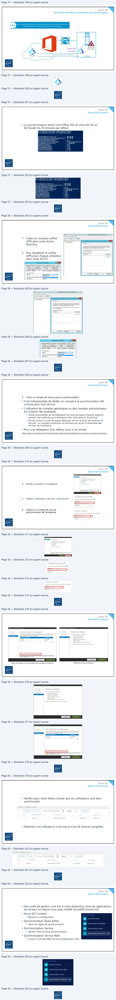
Page 41
Azure AD
Synchronization Service Manager
• Opérations
• Vous pouvez voir le statut de vos dernières synchronisations
81
Azure AD
Synchronization Rules Editor
• Cette console permet de
créer des règles de
synchronisation
spécifiques
• Vous pouvez modifier ou
créer de nouvelles règles
• Attention lorsque vous
modifiez les règles par
défaut
82
Texte relevé dans les illustrations
=
‘Synchronization Service Manager on WIN-U80OU9MONQI
File
Tools
Actions
Help
[ao ae]
Operations
li) Connectors | iB Metaverse Designer
{M Metaverse Search
[Name] Profie Name
[Status
StatTime
[EndTime
]
EE EEEE
ZUNE TOS
envecole lel
Exot
success
2/11/2018 103748
2/11/2018 103749
ervecoe el
Deta Synchronization
success
21/11/2018 10:37:20
21/11/2018 10:37:20
envecoe lel
Deta Inport
success
21/11/2018 103718
nan 10:37:19
ren ecole il
Exot
success
21/11/2018 100745
21/11/2018 100746
Profle Name: Ful impot User Name: ENHECOLE Administrator
Step Type:
Ful impot (Stage On)
Partiéon: _ DC-anrecale DC-cl
StartTime:
21/11/2018 105229
EndTime:
21/11/2018 105231
Status: succes
Sychrorization Statics
Connection Save
Staging
WIN-J800U9MONG|
en-ecole
388
success
Unchanged
2
Aad
0
Sirchoniaton Eros
Updates
0
Renames
0
Deletes
187
Discovery
9
Fitered Objects
4
ent
©
‘Synchronization Rules Editor
Lo
Infrom AD - User Join
:
ne
~
CS oe pou
ent
Page 42
Azure AD
Forcer une synchronisation AD Connect
• Lancer la réplication initiale
Start-ADSyncSyncCycle -PolicyType Initial
• Lancer une réplication différentielle
Start-ADSyncSyncCycle -PolicyType Delta
83
Administration Microsoft 365
RBAC
84
Texte relevé dans les illustrations
BE
EE
A
End
Page 43
RBAC
Délégation de privilèges
• Pour une gestion fine de l’attribution de droits d’administration
Exchange, il existe une console nommée RBAC (Role Based Access
Control)
• Basé sur des rôles prédéfinis, vous pourrez attribuer à des
utilisateurs ou techniciens des privilèges pour administrer la partie
Exchange Online de Microsoft 365
• L’affectation de permissions devra se faire au travers de comptes
administrateurs spécifiques et avec le principe du privilège
minimum
85
Gestion des licences
Les différents rôles administrateur Microsoft 365
Nom dans l'admin
center de Office365
Nom
Dans PowerShell
Rôle
Administrateur général
Company
administrator
Il a accès à toutes les fonctionnalités. Celui qui a acheté Microsoft 365 a
ce rôle par défaut. Ne donnez pas ce rôle à tout le monde.
Administrateur de
facturation
Billing
administrator
Il effectue les achats, gère les abonnements et les tickets support. Il
surveille l'état des services.
Administrateur de mot
de passe
Helpdesk
administrator
Il réinitialise les mots de passe. Il gère les tickets support et surveille
l'état des services.
Administrateur de
Service support
Il gère les tickets support et surveille l'état des services.
service
administrator
Administrateur de
gestion des utilisateurs
User account
administrator
Il créé et supprime des utilisateurs et des groupes, réinitialise les mots
de passe, gère les tickets support et surveille l'état des services.
86
Texte relevé dans les illustrations
N
End
eee
| Nom dans l'admin center de Office365 | Nom Dans PowerShell | Rôle |
| Administrateur général | Company administrator | Il a accès à toutes les fonctionnalités. Celui qui a achetéMicrosoft 365 a ce rôle par défaut. Ne donnez pas ce rôle à tout le monde. |
| Administrateur de facturation | Billing administrator | Il effectue les achats, gère les abonnements et les tickets support. Il surveille l'état des services. |
| Administrateur de mot de passe | Helpdesk administrator | Il réinitialise les mots de passe. Il gère les ticketssupport et surveille l'état des services. |
| Administrateur de service | Service support administrator | Il gère les ticketssupport et surveille l'état des services. |
| Administrateur de gestion des utilisateurs | User account administrator | Il créé et supprime des utilisateurset des groupes, réinitialise les mots de passe, gère les ticketssupport et surveille l'état des services. |
Page 44
Gestion des licences
Les différents rôles administrateur Microsoft 365
Quelques commandes PowerShell
Quels sont les rôles
Get-MsolRole
Quels sont les rôles assignés à un utilisateur
Get-MsolUserRole
Add-MsolRoleMember
Ajouter des membres à un rôle
remove-
MsolRoleMember
Supprimer des membres à un rôle
87
RBAC
Délégation de privilèges
• Chaque rôle possède une liste d’actions
88
Texte relevé dans les illustrations
Compliance Management
Discovery Management
Help Desk
Organization Management
Recipient Management
Records
Management
Security Administrator
Security Reader
TenantAdmins_-2066172001
View-Only Organization Management
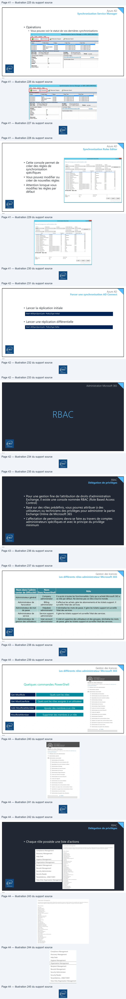
Page 45
RBAC
Rôles personnalisés
2
• Créez vos
propres
rôles
1
3
4
5
89
Texte relevé dans les illustrations
EH
Centre d'administration Exchange
Rôles d'administrateur
@
Accu
.
HE
Centre d'administration Exchange
=Ù
Rôles d'administrateur >Ajouter
un groupe de rôles
a
—
2
eet
Configurer les informations de base
D Rôtes dadminstr
mms
D
en.
CAS
D
ie
deu
re
Be»
©
He
Portée d'écriture ©
sco
oo
à
Affecter des administrateurs
FT
-
ene
a
to
Sach
ae
-
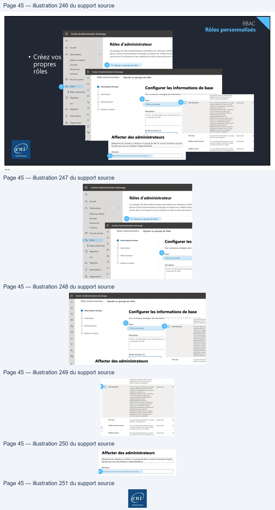
Référence du document : 1QXg3d1FfYiKv7fxyFAOEBtFgxcG4rQL3 · SHA-256 2d6cbe49ac253b8c…
Énoncé · M2 - Enoncé du TP 1 - Utilisateurs et groupes · 3 pages transcrites
Dossier Module 3 conservé à la demande de l’utilisateur : les cinq fichiers sont des copies exactes de ceux du Module 2 (empreintes SHA-256 identiques). Le titre interne indique Module 02 — Administration Microsoft 365. Aucun support distinct du Module 3 n’a été fourni.
Page 1
Cloud et Microsoft 365
Utilisateurs et groupes
TP 01 du Module 02 – Administration Microsoft 365
Avant de démarrer ce TP, il convient d’avoir suivi les vidéos des modules 1 et 2 et d’avoir
réalisé les TP proposés.
Enoncé
Objectifs
Créer des utilisateurs et des groupes dans Microsoft 365 suivant l’annexe 1
Prérequis
•
Avoir une connexion internet
Principales tâches à réaliser
Créez des utilisateurs Microsoft 365 sans affecter de licence.
•
Créez un utilisateur Zachary Ramablag avec comme nom de connexion Zachary et
comme pays le Canada, fonction Formateur, service Pédagogie.
Notez son mot de passe temporaire.
•
Créez un utilisateur Vishnou Lapaix avec comme nom de connexion Vishnou et comme
pays les USA, fonction Formateur, service Pédagogie.
Notez son mot de passe temporaire.
•
Créez un utilisateur Oussama Lairbon avec comme nom de connexion Oussama et
comme pays la France, fonction Cuisinier, service Restauration.
Notez son mot de passe temporaire.
•
Créez un utilisateur en PowerShell Sacha Touille avec comme nom de connexion Sacha
et comme pays le Japon, fonction Cuisinier, service restauration, comme mot de passe
Pa55w.rd et il doit changer son mot de passe à la prochaine connexion.
•
Connectez-vous avec cet utilisateur.
Que constatez-vous ?
Comment pourriez-vous régler ce problème ? Faites-le.
•
Connectez-vous avec cet utilisateur.
Notez son nouveau mot de passe.
•
Créez un utilisateur en PowerShell Lab Eni avec comme nom de connexion labeni et
comme pays la France, fonction Administrateur, service Informatique, comme mot de
Page 1/3
© ENI – Tous droits réservés
Page 2
Cloud et Microsoft 365
passe Pa55w.rd, lui ajouter le rôle administrateur global.
•
Changez la fonction de Oussama Lairbon en chef cuisinier
•
Supprimer Vishnou Lapaix.
•
Vérifiez qu’il est bien dans les utilisateurs supprimés puis restaurez-le.
•
Supprimez Sacha Touille en PowerShell puis restaurez-le en PowerShell.
•
Assignez une licence complète à Oussama Lairbon.
•
Assignez une licence complète en PowerShell à Zachary Ramablag
•
En PowerShell assignez une licence à Sacha sans Sway, Power BI, Azure Rights
Management.
•
Assignez une licence à Vishnou Lapaix sans Office Online.
•
Vérifiez en vous connectant à son compte.
•
Réactivez Office Online pour Vishnou Lapaix.
•
Créez les groupes Microsoft 365 GO_Restauration, GO_Commercial, GO_Infirmerie,
GO_Informatique,
GO_RH,
GO_CE,
GO_Pedagogie,
GO_Moyens_Generaux,
GO_Comptabilite,
GO_Commercial,
GO_Communication,
GO_Secretaire,
GO_Service_Achats, GO_Adminstratifs et GO_Direction avec une description pour
chaque groupe.
•
Mettez chaque utilisateur dans son groupe de service et votre compte de tenant dans
le service et le groupe informatique et administrateur comme fonction.
•
Mettez Vishnou Lapaix membre de Pédagogie, Deration Mo dans le groupe CE , Yves
Remord dans le groupe commercial.
•
Créez un groupe de sécurité nommé jedemolet avec comme membres : Zachary
Ramablag, Vishnou Lapaix, Oussama Lairbon, Sacha Touille.
•
Ajoutez le rôle « administrateur de mot de passe » à Vishnou Lapaix.
•
Connectez-vous en tant que Vishnou Lapaix et envoyez un mail au groupe Pédagogie.
Vérifiez que vous le recevez bien.
•
Restez connecté en tant que Vishnou Lapaix et réinitialisez le mot de passe de Zachary
Ramablag.
•
Réinitialisez le mot de passe de Oussama Lairbon en PowerShell.
•
Ajoutez le rôle « Administrateur de licence » à Oussama Lairbon en PowerShell.
Page 2/3
© ENI – Tous droits réservés
Page 3
Cloud et Microsoft 365
Annexe 1
nom
Prénom
GROUPES
login
service
fonction
pays
Durand
Micheline
GO_Informatique
Informatique
Administrateur
Ramablag
Zachary
GO_Pédagogie, GDS_Jedemolet
Zachary
Pédagogie
Formateur
Canada
Lapaix
Vishnou
GO_Pédagogie, GDS_Jedemolet
Vishnou
Pédagogie
Formateur
USA
Lairbon
Oussama
GO_Restauration, GDS_Jedemolet
Oussama
Restauration
Cuisinier
France
Touille
Sacha
GO_Restauration, GDS_Jedemolet
Sacha
Restauration
Cuisinier
Japon
Eni
Lab
GO_Informatique
labeni
Informatique
Administrateur
France
Terieur
Alain
GO_Moyens_Généraux
aTerieur
Moyens Generaux
Architecte
France
Diot
Kailee
GO_Commercial
kDiot
Commercial
Commercial
Japon
Commandement
Lydie
GO_Service_Achats, GO_Direction
lCommandement
Achats
Directrice
France
Fonfec
Sophie
GO_Direction, GO_Restauration
sFonfec
Restauration
Directrice
France
Entrengare
Micheline
GO_Pédagogie
mEntrengare
Pedagogie
Formateur
France
Femal
Aicha
GO_Infirmerie
aFemal
Infirmerie
Infirmiere
France
Dorsa
Elsa
GO_Administratifs
eDorsa
Administratif
Receptionniste
France
Femal
Usama
GO_Infirmerie
uFemal
Infirmerie
Responsable
France
Vadeboncoeur
Elie
GO_RH, GO_secretaire
eVadeboncoeur
RH
Secretaire
France
Ateur
Nordine
GO_Informatique
nAteur
Informatique
Technicien
France
Deration
Mo
GO_Communication, GO_CE
mderation
Communication
Community Manager
France
Hawk
Thomas
GO_Comptabilite, GO_secretaire
thawk
Comptabilite
secretaire
France
Page 3/3
© ENI – Tous droits réservés
| nom Durand Ramablag Lapaix Lairbon Touille Eni Terieur Diot | Prénom Micheline Zachary Vishnou Oussama Sacha Lab Alain Kailee | GROUPES GO Informatique _ GO _Pédagogie, GDS _Jedemolet GO _Pédagogie, GDS _Jedemolet GO _Restauration, GDS _Jedemolet GO _Restauration, GDS _Jedemolet GO Informatique _ GO Moyens Généraux _ _ GO Commercial _ | login Zachary Vishnou Oussama Sacha labeni aTerieur kDiot | service Informatique Pédagogie Pédagogie Restauration Restauration Informatique MoyensGeneraux Commercial | fonction Administrateur Formateur Formateur Cuisinier Cuisinier Administrateur Architecte Commercial | pays Canada USA France Japon France France Japon |
| Commandement | Lydie | GO _Service _Achats, GO _Direction | lCommandement | Achats | Directrice | France |
| Fonfec | Sophie | GO _Direction, GO _Restauration | sFonfec | Restauration | Directrice | France |
| Entrengare Femal Dorsa Femal Vadeboncoeur Ateur Deration Hawk | Micheline Aicha Elsa Usama Elie Nordine Mo Thomas | GO Pédagogie _ GO Infirmerie _ GO Administratifs _ GO Infirmerie _ GO _RH GO _secretaire , GO Informatique _ GO _Communication, GO _CE GO _Comptabilite, GO _secretaire | mEntrengare aFemal eDorsa uFemal eVadeboncoeur nAteur mderation thawk | Pedagogie Infirmerie Administratif Infirmerie RH Informatique Communication Comptabilite | Formateur Infirmiere Receptionniste Responsable Secretaire Technicien CommunityManager secretaire | France France France France France France France France |
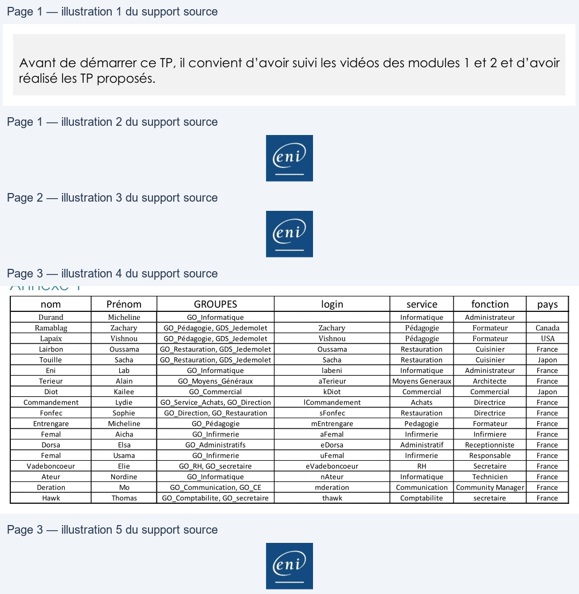
Référence du document : 1wU7nbtTzD6ImXy4wWZ2oezVQvQxR6QLW · SHA-256 16589f599d6f5c87…
Énoncé · M2 - Enoncé du TP 2 - Azure AD Connect · 2 pages transcrites
Dossier Module 3 conservé à la demande de l’utilisateur : les cinq fichiers sont des copies exactes de ceux du Module 2 (empreintes SHA-256 identiques). Le titre interne indique Module 02 — Administration Microsoft 365. Aucun support distinct du Module 3 n’a été fourni.
Page 1
Cloud et Microsoft 365
Azure AD
TP 02 du Module 02 – Administration Microsoft 365
Avant de démarrer ce TP, il convient d’avoir suivi les vidéos des modules 1 et 2 et d’avoir
réalisé les TP proposés.
Enoncé
Objectifs
Synchroniser les utilisateurs de votre Active Directory local avec Microsoft 365
Prérequis
Disposer de l’ISO Windows Server 2019 en anglais.
Principales tâches à réaliser
•
Installez un serveur, contrôleur de domaine avec comme domaine cheouamXX.lcl où
XX est votre numéro de stagiaire.
OS
Windows Serveur 2019
Nom
CD-2k19-XX
RAM
4 Go
HDD
60 Go
Services
ADDS, DNS
cheouamXX.lcl
Nom de
domaine
IP
10.65.0.1 /24
Connexion VMWare NAT
•
Créez l’arborescence d’OU et les utilisateurs ci-dessous dans votre Active directory, en
respectant les bonnes pratiques (renseignez les attributs fonction et service dans l’AD).
Nom et prénom
Fonction
Service
Nom de connexion
Vous
Administrateur
Informatique
prenom-admin@cheouamXX.lcl
Lucie Fer
Comptable
Comptabilité
lfer@cheouamXX.lcl
Ella Danlos
Responsable
Comptabilité
edanlos@cheouamXX.lcl
comptable
Paul Amploi
Directeur Général
Direction
pamploi@cheouamXX.lcl
Cécile Encieu
Commercial
Commercial
cencieu@cheouamXX.lcl
Page 1/2
© ENI – Tous droits réservés
Texte relevé dans les illustrations
——
| OS | WindowsServeur2019 | |
| Nom | CD 2k19 XX - - | |
| RAM | 4Go | |
| HDD | 60Go | |
| Services | ADDS DNS , | |
| Nomde domaine | cheouamXXlcl . | |
| IP | 106501/24 . . . | ConnexionVMWareNAT |
| Nometprénom | Fonction | Service | Nomdeconnexion |
| Vous | Administrateur | Informatique | prenom-admin@cheouamXX .lcl |
| LucieFer | Comptable | Comptabilité | lfer@cheouamXXlcl . |
| EllaDanlos | Responsable comptable | Comptabilité | edanlos@cheouamXXlcl . |
| PaulAmploi | DirecteurGénéral | Direction | pamploi@cheouamXXlcl . |
| CécileEncieu | Commercial | Commercial | cencieu@cheouamXXlcl . |
Page 2
Cloud et Microsoft 365
Pour rappel, les bonnes pratiques sont :
1 UO _cheouamXX
1 OU Utilisateurs
1 OU Comptes de service
1 OU par lieu
1 OU par service
1 modèle par type de compte
1 OU Groupes
1 OU Domaine Local
1 OU Groupe Global
1 GG par service
1 OU Archives
•
Préparez l’Active Directory à utiliser la Synchronisation AD Connect
•
Installez AzureADConnect.msi en mode express setting pour votre domaine
cheouamXX.lcl.
•
Faites une procédure et vérifiez que vos utilisateurs sont bien synchronisés.
•
Vérifiez, en PowerShell, l’intervalle de temps entre deux synchronisations.
•
Modifiez votre connecteur afin de ne synchroniser que les OU groupes et utilisateurs.
•
Créez un nouvel utilisateur et forcez immédiatement la synchronisation.
•
Ajoutez un alias à cet utilisateur, forcez à nouveau la synchronisation si besoin.
Page 2/2
© ENI – Tous droits réservés

Référence du document : 1me6SILxxJNgD0AiCdjStFN8-rUMBQuex · SHA-256 67cd7d118de46260…
Correction · M2 - Solution du TP 1 - Utilisateurs et groupes · 4 pages transcrites
Dossier Module 3 conservé à la demande de l’utilisateur : les cinq fichiers sont des copies exactes de ceux du Module 2 (empreintes SHA-256 identiques). Le titre interne indique Module 02 — Administration Microsoft 365. Aucun support distinct du Module 3 n’a été fourni.
Correction originale : à consulter après avoir tenté l’exercice.
Page 1
Cloud et Microsoft 365
Utilisateurs et groupes
TP 01 du Module 02 – Administration Microsoft 365
Avant de démarrer ce TP, il convient d’avoir suivi les vidéos des modules 1 et 2 et d’avoir
réalisé les TP proposés.
Solution
Objectifs
Créer des utilisateurs et des groupes dans Microsoft 365 suivant l’annexe 1
Prérequis
•
Avoir une connexion internet
Principales tâches à réaliser
Créez des utilisateurs Microsoft 365 sans affecter de licence.
•
Créez un utilisateur Zachary Ramablag avec comme nom de connexion Zachary et
comme pays le Canada, fonction Formateur, service Pédagogie.
Notez son mot de passe temporaire.
•
Créez un utilisateur Vishnou Lapaix avec comme nom de connexion Vishnou et comme
pays les USA, fonction Formateur, service Pédagogie.
Notez son mot de passe temporaire.
•
Créez un utilisateur Oussama Lairbon avec comme nom de connexion Oussama et
comme pays la France, fonction Cuisinier, service Restauration.
Notez son mot de passe temporaire.
•
Créez un utilisateur en PowerShell Sacha Touille avec comme nom de connexion Sacha
et comme pays le Japon, fonction Cuisinier, service restauration, comme mot de passe
Pa55w.rd et il doit changer son mot de passe à la prochaine connexion.
New-MsolUser -UserPrincipalName SachaTouille@labeni.ovh -DisplayName SachaTouille -FirstName Sacha -LastName Touille –department restauration –title cuisinier-Password Pa55w.rd -ForceChangePassword $true -UsageLocation jp
•
Connectez-vous avec cet utilisateur.
Que constatez-vous ? Impossible de se connecter sans licence.
Comment pourriez-vous régler ce problème ? Faites-le.
Il faut lui assigner une licence, soit au travers de la console graphique, soit avec PowerShell.
Page 1/4
© ENI – Tous droits réservés
Page 2
Cloud et Microsoft 365
Pour avoir l'info :
Get-MsolAccountSku
Get-MsolUser
-all
-Department
restauration
-UsageLocation
jp
-
UnlicensedUsersOnly
|
ForEach-Object
{Set-MsolUserLicense
-
UserPrincipalName
$_.userprincipalname
-AddLicenses
"slebouchereni:ENTERPRISEPREMIUM"}
•
Connectez-vous avec cet utilisateur.
Notez son nouveau mot de passe.
•
Créez un utilisateur en PowerShell Lab Eni avec comme nom de connexion labeni et
comme pays la France, fonction Administrateur, service Informatique, comme mot de
passe Pa55w.rd, lui ajouter le rôle administrateur global.
New-MsolUser -UserPrincipalName labeni@labeni.ovh -DisplayName labeni - FirstName lab -LastName eni –department Informatique –title Administrateur -Password Pa55w.rd -UsageLocation fr
Add-MsolRoleMember -RoleName "Company Administrator" - RoleMemberEmailAddress "labeni@labeniXX.ovh"
•
Changez la fonction de Oussama Lairbon en chef cuisinier
Set-MsolUser -UserPrincipalName Oussama@labeni15.ovh -title "Chef Cuisinier"
•
Supprimer Vishnou Lapaix.
•
Vérifiez qu’il est bien dans les utilisateurs supprimés puis restaurez-le.
•
Supprimez Sacha Touille en PowerShell puis restaurez-le en PowerShell.
Remove-MsolUser –UserPrincipalName "Sacha@labeni.ovh"
Restore-MsolUser –UserPrincipalName "Sacha@labeni.ovh"
•
Assignez une licence complète à Oussama Lairbon.
•
Assignez une licence complète en PowerShell à Zachary Ramablag
Set-MsolUserLicense –UserPrincipalName "Zachary@labeni.ovh" – AddLicenses "letenant:ENTERPRISEPREMIUM"
•
En PowerShell assignez une licence à Sacha sans Sway, Power BI, Azure Rights
Management.
(Get-MsolUser -UserPrincipalName Sacha@labeni15.ovh).Licenses.ServiceStatus
SWAY = SWAY, Power BI = BI_AZURE_P2, Azure Managment Right = RMS_S_ENTREPRISE
$LOW = New-MsolLicenseOptions -AccountSkuId "slebouchereni:ENTERPRISEPREMIUM" -disabledplans "SWAY", "BI_AZURE_P2", "RMS_S_ENTERPRISE"
Set-MsolUserlicense -UserPrincipalName Sacha@labeni15.ovh - LicenseOptions $LOW
Page 2/4
© ENI – Tous droits réservés
Page 3
Cloud et Microsoft 365
•
Assignez une licence à Vishnou Lapaix sans Office Online.
•
Vérifiez en vous connectant à son compte.
•
Réactivez Office Online pour Vishnou Lapaix.
•
Créez les groupes Microsoft 365 GO_Restauration, GO_Commercial, GO_Infirmerie,
GO_Informatique,
GO_RH,
GO_CE,
GO_Pedagogie,
GO_Moyens_Generaux,
GO_Comptabilite,
GO_Commercial,
GO_Communication,
GO_Secretaire,
GO_Service_Achats, GO_Adminstratifs et GO_Direction avec une description pour
chaque groupe.
•
Mettez chaque utilisateur dans son groupe de service et votre compte de tenant dans
le service et le groupe informatique et administrateur comme fonction.
•
Mettez Vishnou Lapaix membre de Pédagogie, Deration Mo dans le groupe CE , Yves
Remord dans le groupe commercial.
•
Créez un groupe de sécurité nommé jedemolet avec comme membres : Zachary
Ramablag, Vishnou Lapaix, Oussama Lairbon, Sacha Touille.
•
Ajoutez le rôle « administrateur de mot de passe » à Vishnou Lapaix.
•
Connectez-vous en tant que Vishnou Lapaix et envoyez un mail au groupe Pédagogie.
Vérifiez que vous le recevez bien.
•
Restez connecté en tant que Vishnou Lapaix et réinitialisez le mot de passe de Zachary
Ramablag.
•
Réinitialisez le mot de passe de Oussama Lairbon en PowerShell.
Set-MsolUserPassword -UserPrincipalName "oussama@laneni.ovh" - NewPassword 'Pa55w.rd123'
•
Ajoutez le rôle « Administrateur de licence » à Oussama Lairbon en PowerShell.
Add-MsolRoleMember -RoleName "Billing Administrator" - RoleMemberEmailAddress "oussama@labeni.ovh"
Page 3/4
© ENI – Tous droits réservés
Page 4
Cloud et Microsoft 365
Annexe 1
nom
Prénom
GROUPES
login
service
fonction
pays
Durand
Micheline
GO_Informatique
Informatique
Administrateur
Ramablag
Zachary
GO_Pédagogie, GDS_Jedemolet
Zachary
Pédagogie
Formateur
Canada
Lapaix
Vishnou
GO_Pédagogie, GDS_Jedemolet
Vishnou
Pédagogie
Formateur
USA
Lairbon
Oussama
GO_Restauration, GDS_Jedemolet
Oussama
Restauration
Cuisinier
France
Touille
Sacha
GO_Restauration, GDS_Jedemolet
Sacha
Restauration
Cuisinier
Japon
Eni
Lab
GO_Informatique
labeni
Informatique
Administrateur
France
Terieur
Alain
GO_Moyens_Généraux
aTerieur
Moyens Generaux
Architecte
France
Diot
Kailee
GO_Commercial
kDiot
Commercial
Commercial
Japon
Commandement
Lydie
GO_Service_Achats, GO_Direction
lCommandement
Achats
Directrice
France
Fonfec
Sophie
GO_Direction, GO_Restauration
sFonfec
Restauration
Directrice
France
Entrengare
Micheline
GO_Pédagogie
mEntrengare
Pedagogie
Formateur
France
Femal
Aicha
GO_Infirmerie
aFemal
Infirmerie
Infirmiere
France
Dorsa
Elsa
GO_Administratifs
eDorsa
Administratif
Receptionniste
France
Femal
Usama
GO_Infirmerie
uFemal
Infirmerie
Responsable
France
Vadeboncoeur
Elie
GO_RH, GO_secretaire
eVadeboncoeur
RH
Secretaire
France
Ateur
Nordine
GO_Informatique
nAteur
Informatique
Technicien
France
Deration
Mo
GO_Communication, GO_CE
mderation
Communication
Community Manager
France
Hawk
Thomas
GO_Comptabilite, GO_secretaire
thawk
Comptabilite
secretaire
France
Page 4/4
© ENI – Tous droits réservés
| nom Durand Ramablag Lapaix Lairbon Touille Eni Terieur Diot | Prénom Micheline Zachary Vishnou Oussama Sacha Lab Alain Kailee | GROUPES GO Informatique _ GO _Pédagogie, GDS _Jedemolet GO _Pédagogie, GDS _Jedemolet GO _Restauration, GDS _Jedemolet GO _Restauration, GDS _Jedemolet GO Informatique _ GO Moyens Généraux _ _ GO Commercial _ | login Zachary Vishnou Oussama Sacha labeni aTerieur kDiot | service Informatique Pédagogie Pédagogie Restauration Restauration Informatique MoyensGeneraux Commercial | fonction Administrateur Formateur Formateur Cuisinier Cuisinier Administrateur Architecte Commercial | pays Canada USA France Japon France France Japon |
| Commandement | Lydie | GO _Service _Achats, GO _Direction | lCommandement | Achats | Directrice | France |
| Fonfec | Sophie | GO _Direction, GO _Restauration | sFonfec | Restauration | Directrice | France |
| Entrengare Femal Dorsa Femal Vadeboncoeur Ateur Deration Hawk | Micheline Aicha Elsa Usama Elie Nordine Mo Thomas | GO Pédagogie _ GO Infirmerie _ GO Administratifs _ GO Infirmerie _ GO _RH GO _secretaire , GO Informatique _ GO _Communication, GO _CE GO _Comptabilite, GO _secretaire | mEntrengare aFemal eDorsa uFemal eVadeboncoeur nAteur mderation thawk | Pedagogie Infirmerie Administratif Infirmerie RH Informatique Communication Comptabilite | Formateur Infirmiere Receptionniste Responsable Secretaire Technicien CommunityManager secretaire | France France France France France France France France |

Référence du document : 1_CAYnYBOD0DQW9uNGykBtX_GAqNUtC-G · SHA-256 5aa0bc1641f5fddd…
Correction · M2 - Solution du TP 2 - Azure AD Connect · 19 pages transcrites
Dossier Module 3 conservé à la demande de l’utilisateur : les cinq fichiers sont des copies exactes de ceux du Module 2 (empreintes SHA-256 identiques). Le titre interne indique Module 02 — Administration Microsoft 365. Aucun support distinct du Module 3 n’a été fourni.
Correction originale : à consulter après avoir tenté l’exercice.
Page 1
Cloud et Microsoft 365
Azure AD
TP 02 du Module 02 – Administration Microsoft 365
Avant de démarrer ce TP, il convient d’avoir suivi les vidéos des modules 1 et 2 et d’avoir
réalisé les TP proposés.
Solution
Il faut maintenant préparer l’Active Directory ; une liste d’étapes sera à effectuer :
1. Ajouter un suffixe DNS.
2. Remapper le suffixe DNS des utilisateurs existants (attention aux impacts sur les logins
utilisateurs selon le mode de connexion).
3. Renseigner l’adresse mail dans les comptes utilisateurs.
4. Créer une OU spécifique pour le compte de service et créer un compte de service
administrateur de l’entreprise pour la synchronisation AD.
5. Créer un compte Microsoft 365 administrateur général.
Page 1/19
© ENI – Tous droits réservés
Page 2
Cloud et Microsoft 365
•
Ouvrez la console Domaines et approbations Active Directory
•
Sur Domaines et approbations, effectuez un clic droit / Propriétés et ajoutez le nom de
domaine public utilisé dans votre tenant Microsoft 365 et cliquez sur Ajouter puis OK.
•
Ouvrez la console Utilisateurs et ordinateurs Active Directory.
•
Sélectionnez les utilisateurs qui seront à synchroniser et effectuez un clic droit /
Propriétés. Dans l’onglet compte, cochez la case Suffixe UPN et sélectionnez le suffixe
UPN que vous venez d’ajouter. Cliquez sur OK.
NB : cette opération peut avoir de forts impacts sur la production si les utilisateurs se
connectent avec le format UPN. Assurez-vous de la méthode de connexion avant de
réaliser cette action.
Page 2/19
© ENI – Tous droits réservés
Texte relevé dans les illustrations
|
Domaines et approbations Active Directory
Application de bureau
a Domaines et approbations Active Directory
Fichier
Action
Affichage
7?
eo, HOGS \ EE
|hoonet
Changer de forêt.
ti
;
;
mrepns)
Changer le contrôleur de domaine Active Directory...
et approbations Active [
Maitre d'opérations...
s actions
Augmenter le niveau fonctionnel de la forêt.
Affichage
>
Actualiser
Exporter la liste...
Propriétés
Aide
Suffixes UPN
Les noms du domaine actif et du domaine racine sont les suffices IPN
(nom utilisateur principal) par défaut. L'ajout d'autres noms de domaines
augmente la sécunté des sessions et simplifie les noms d'ouverture de
session des utilisateurs.
Si vous voulez que d'autres suffixes UPN apparaissent lors de la création
d'utilisateurs, ajouteztes à la liste suivante.
Autres suffices UPN
:
formoeleni, xyz
Ajouter
Supprimer
Page 3
Cloud et Microsoft 365
•
Modifiez l’adresse mail des deux comptes :
•
Créez une nouvelle OU Comptes de services et créez le compte qui sera utilisé pour la
synchronisation AD.
Page 3/19
© ENI – Tous droits réservés
Texte relevé dans les illustrations
Dy Utilisateurs et ordinateurs Active Directory
Fichier
Action
Affichage
?
ed 40
¢ XOB Em teevrae
BF Utilisateurs
et ordinateurs Active! Nom
Type
Description
>a
Requêtes enregistrées
+ A Utilisateur 1
Utilisateur
¥ # Entreprise.eni
LA Utilisateur 2
v Bi _Entreprise
Ajouterà un groupe...
> al Groupes
Désactiver le compte
Mir
Activer le compte
> © Builtin
+
> © Computers
Déplacer...
> El Domain Controllers
Ouvrir la page de démarrage
> © ForeignSecurityPrincipals
Envoyer un message
> [fi Managed Service Accoun
> ©
Users
Toutes les taches
>
Couper
Supprimer
Propriétés
Aide
iJ
Utilisateurs
et
teurs Active Director
Qo
x
Fichier
Action
_Affichage
?
¢o9 4
Propriétés d'éléments multiples
?
x
EI Utilisateurs
et} Général Compte Adresse
Profil
Organisation
> DB Requêtes
¥ ii Entreprise]
| Pour modifier les propriétés de plusieurs objets, sélectionnez
la case à cocher pour activer la
-
modification, puis sélectionnezla modification
v Bi _Entrey
> El Gr
1 uti
à
@Entreprise eni
SP)
Horas dois:
> D Foreigf
Cy restrictions d'ordinateurs :
Se connecterà.
> [ Mana
> Gi Users
Options
de compte :
ael
Adresse
de messagene :
user! @formceleni.xyz
Adresse de messagene:
|user@fommeeleni.xyz
ent
Page 4
Cloud et Microsoft 365
•
Allez dans les propriétés du compte Active Directory et dans l’onglet Membre de,
ajoutez le groupe Administrateurs de l’entreprise.
Page 4/19
© ENI – Tous droits réservés
Texte relevé dans les illustrations
1 Utilisateurs et ordinateurs Active Directory
-
o
x
Fichier
Action
Affichage
7
e+2nr
D OSB Es teaerae
J] Utilisateurs
et ordinateurs Active 0]! Nom
Type
Description
» Di Requêtes enregistrées
+ i Entrepriseeni
Aucun élémentà afficher dans cet aperçu.
v Bi Entreprise
>
[Bi Groupes
{GJ Utilisateurs
Délégation de contrôle...
Bl Comptes de service
. lacer..
> LI Builtin
Dép
> D Computers
Rechercher...
> El Domain Controllers
Men
>
Ordinateur
>
(Gl ForeignSecurityPrincipals
SESS
,
ene
>
If] Managed Service Accounts
> (Users
Actualiser
ET
InetOrgPerson
Affichage
.
msDS-ShadowPrincipalContainer
Réorganiser les icônes
>
msimaging-PSPs
Aligner les icônes
Alias de file d'attente MSMQ
Propriétés
Unité d'organisation
Aida
Imprimante
Utilisateur
Dossier partagé
<
>
Créer un nouvel objet...
Nouvel objet - Utilisateur
x
LA
Créer dans : Entrepnse.eni/_Entrepnse/Utilisateurs
Prénom
:
svc
Initiales:
Nom
:
ADConnect
Nom complet :
SVC ADConnect
Nom d'ouverture de session de l'utilisateur :
SVC-ADConnect
v
Nom d'ouverture de session de l'utilisateur (anténeur à Windows 2000) :
ENTREPRISE\
SVC-ADConnect
<a
pere

Page 5
Cloud et Microsoft 365
Création d’un compte administrateur général dans la console
Microsoft 365
•
Ajoutez un nouvel utilisateur.
•
Renseignez les champs nécessaires et n’affectez pas de licence.
Page 5/19
© ENI – Tous droits réservés
Texte relevé dans les illustrations
Environnement
Sessions
Controleà distance Profil des services Bureau à distance
COM+
Général
Adresse
Compte
Profil
Téléphones
Organisation
Membre de | Apnal antrant
Membre de
:
Nom
Dossier Services de domaine Active Directory
Noms multiples trouvés
x
CCC Cr om Users
Plusieurs objets correspondent au nom administrateur. Sélectionnez un ou
plusieurs noms dans la liste,ou retapez
le nom.
Noms comespondants
Nom
Description
Dossier
BB Administrateurs
Entreprise.eni/Builtin
RE Administrateurs clés
Lesmembres
de ce groupe pe... Entreprise.eni/Users
82,Administrateurs clés Enterprise
Les membres de ce groupe pe.
Entreprise eni/Users
a
Ajouter...
Supprimer
BB Administrateurs du schéma
Administrateurs désignés du sc...
Entreprise.eni/Users
RE Administrateurs Hyper-V
Entreprise.eni/Builtin
Groupe principal:
_Utilsateurs du domaine
Il n'est pas utile de modifierle groupe principal, sauf
Defnir le groupe principal
disposez de clients Macintosh ou d'applications cor
POSIX.
OK
Annuler
OK
Annuler
Appliquer
Aide
HI
Microsoft 365 centre d'administration
=
eni ecole
{à
Accueil
ene
.
Utilisateurs actif:
2
Utilisateurs
a
I
Utilisateurs actifs
Actions recommandées (2)
Contacts
Utilisateurs invités
À, Ajouter un utilisateur
El Mc
Utilisateurs supprimés
*s8
Groupes
Vv
Nom complet T
Page 6
Cloud et Microsoft 365
•
Ajoutez le rôle administrateur général.
Page 6/19
© ENI – Tous droits réservés
Texte relevé dans les illustrations
Configurer les éléments de base
Pour commencer, renseignez des informations de base sur la personne que vous ajoutez en
tant qu'utilisateur.
Prénom
Nom
Nom complet *
SVC AdmAzure
Nom d'utilisateur *
Domaines
[|
Créer automatiquement un mot de passe
Mot de passe *
Un mot de passe fort est nécessaire. Les mots de passe forts se composent de 8 à
256 caractères et doivent combiner au moins trois des éléments suivants
: lettres
majuscules, lettres minuscules, chiffres et symboles.
Demanderà cet utilisateurde modifier son mot de passe lors de sa première connexion
[_] Envoyer le mot de passe par courrier à la fin de l'opération
:
:
Affecter des licences de produits
Affectez les licences souhaitées à cet utilisateur.
Sélectionner un lieu *
Licences (0)*
“A
CO Attribuer une licence de produit à l'utilisateur
Microsoft Power Automate Free
9999 licence(s) sur 10000 disponible(s)
Office 365 E3
22 licence(s) sur 25 disponible(s)
© Créer un utilisateur sans licence de produit (non recommandé)
Il est possible que l'accès de l'utilisateur à Office 365 soit limité ou bloqué tant
que vous ne lui avez pas attribué de licence
Page 7
Cloud et Microsoft 365
Installation d’Azure AD Connect
•
Dans votre console Microsoft 365, allez dans Paramètres / Paramètres de l’organisation
et cherchez Synchronisation d’annuaires.
Page 7/19
© ENI – Tous droits réservés
Texte relevé dans les illustrations
>
.
Paramètres facultatifs
Vous pouvez choisir le rôle à affecter à cet utilisateur et renseigner
profil.
Rôles
Les rôles d'administrateur permettent aux utilisateurs d'afficher des
En savoir plus sur les rôles d'administrateur
O Utilisateur (pas d'accès aux centres d'administration)
© Accès au centre d'administration
Les lecteurs généraux disposent d'un accès en lecture seule au
dans ce qu'ils peuvent voir et faire
{| Administrateur Exchange ©
| Administrateur SharePoint @
CL Administrateur Teams @
CL Administrateur de l'utilisateur ©
{| Administrateur du service de support ©
{| Administrateur du support technique ©
Administrateur général @
CL Lecteur général @
Page 8
Cloud et Microsoft 365
•
Téléchargez ensuite l’outil Azure AD Connect.
•
Exécutez le fichier MSI téléchargé précédemment.
Page 8/19
© ENI – Tous droits réservés
Texte relevé dans les illustrations
iH
Microsoft 365 centre d'administration
A
Rechercher
E
QO
&
?
(mc)
Services
Sécurité et confidentialité
Profil de l'organisation
A Rechercher dans tous...
Accueil
—
A
Utilisateurs
v
35 éléments
1 selected X =
Groupes
v
Fa
Rôles
Nom
?
Description
Ressources
v
0
Modern authentication
Modifier les paramètres d'authentification d'Exchange Online pour toute votre organisation.
3
Facturation
v
@
support
C
SD
Myanabties
Gérez et mettez à jour les paramètres MyAnalytics,
Paramètres
#
A
paramètres
Nouveautés dans Office
Gérer les fonctionnalités de Office qui apparaissent dans les nouveautés
Domaines
Office options d'installation
Choisissez
la fréquence à laquelle les utilisateurs obtiennent des mises à jour de fonctionnalités et les appli
Recherche et intelligence
1 paramètres de l'organisation
A
office Scripts
Permettre aux utilisateurs d'automatiser leurs tâches dans Office sur
le web.
Applications intégrées
M
office surte web
Permettez aux utilisateurs d'ouvrir des fichiers stockés dans des services de stockage tiers dans Offic.
Relations de partenariat
[>
Page d'accueil Microsoft Search in Bing
Personnalisez la page Bing com pour vos utilisateurs connectés
@
Configuration
LA
Rapports
Lv
LZ
Rapports
Gérer les contrôles de confidentialité des données pour les rapportsdu Centre d'administration
©
État d'intégrité
v
Score de productivité
Gérez les contrôles de confidentialité
des données pour le niveau de productivité.
a
EH
SharePoint
Contrôlez le partage externe.
Centres d'administration
© Sirté
G
Speech Services Azure
Autorisez l'utilisation des courriers et documents de votre organisation pour améliorer la précision de la rec
®
Conformité
sway
Gérer les sources de contenu et de partage autorisées pour Sway.
®
Azure Active Directo.
TL
Synchronisation d'annuaires
Synchroniser les utilisateurs sur le cloud à l'aide d’Azure Active Directory.
CY stm
EÂ
Whiteboard
Autoriser les utilisateursà accéderà Microsoft Whiteboard et à collaborer
sur des tableaux blancs partagés.
x
«gs
,
.
Synchronisation d'annuaires
Préparation d'Active Directory
La synchronisation Azure Active Directory permet aux administrateurs de votre
entreprise de synchroniser continuellement vos comptes d'utilisateur et de groupe
locaux avec Active Directory.
L'outil Microsoft Azure Active Directory Connect peut être utilisé pour configurer la
synchronisation de Active Directory.
Télécharger l'outil Microsoft Azure Active Directory Connect

Page 9
Cloud et Microsoft 365
•
Cliquez sur Personnaliser.
•
Cochez Utiliser un compte de service existant et entrez le compte administrateur de
l’entreprise créé précédemment (AD). Cliquez sur Installer.
Page 9/19
© ENI – Tous droits réservés
Texte relevé dans les illustrations
>
-
x
|
.
N
rever
Bienvenue à Azure AD Connect
Configuration rapide
Exécutez cet outil d'installation sur le serveur sur lequel sera installé le composant du service de
synchronisation.
Azure Active Directory Connect intègre vos annuaires locaux et en ligne.
Cet outil d'installation effectue les opérations suivantes
* Vous guide dans le choix d'une solution (par exemple, la synchronisation de hachage du mot de passe ou
la fédération avec AD FS)
©
Installer la synchronisation d'identité et d'autres composants logiciels Microsoft nécessaires pour le
déploiement
* Activez par défaut la télémétrie de l'application et les données sur l'intégrité du composant. Vous pouvez
modifier les données partagées avec Microsoft en mettant à jour vos paramètres de confidentialité,
En savoir plus sur l'identité hybride
M] J'accepte le termes de la licence et le déclaration de confidentialité.
Continuer
>
+ Azure Active Direct:
ect
_
x
Configuration rapide
Si vous disposez d'une forêt Windows Server Active Directory unique, nous effectuerons les opérations
suivantes
:
+ Configuration de la synchronisation des identités dans la forêt AD actuelle de ENTREPRISE
* Configurer la synchronisation de hachage du mot de passe a partir d'AD local vers Azure AD
© Lancement d'une synchronisation initiale
Synchronisation de tous les attributs
+ Activer la mise à niveau automatique
En savoir plus sur la configuration rapide
Sélectionnez Personnaliser pour choisir des options de déploiement avancées ou importer des paramètres à
partir d'un serveur existant.
Entreprise.eni n'est pas un domaine routable. Il est recommandé d'utiliser des paramètres
personnalisés pour configurer des options de connexion utilisateur.
En savoir plus à propos des domaines non routables et des paramètres de connexion utilisateur.
Personnaliser
Utiliser la configuration rapide
Page 10
Cloud et Microsoft 365
•
Cochez Synchronisation de hachage du mot de passe et cliquez sur Suivant.
•
Entrez le compte administrateur général créé précédemment (Compte Azure).
Page 10/19
© ENI – Tous droits réservés
Texte relevé dans les illustrations
>
Mic
t
)i
fr
-
x
L
.
sven
Installer les composants nécessaires
Configuration rapide
.
;
;
.
Aucun service de synchronisation existant n'a été trouvé sur cet ordinateur. Le service de synchronisation
Composants requis
Azure AD Connect sera installé. @
Connexion utilisateur
Spécifier un emplacement d'installation personnalisé
LT Utiliser un SQL Server existant
VJ Utiliser un compte de service existant
D Compte de service administré
© Compte de domaine
NOM DU COMPTE DE SERVICE
Entreprise\SVC-ADConnect
MOT DE PASSE DU COMPTE DE SERVICE
ET Spécifier des groupes de synchronisation personnalisés
[] importer les paramètres de synchronisation (Aperçu) En savoir plus
Heel
>
5
fs:
Configuration rapide
9
P
Sélectionnez la méthode d'authentification. @
Composants requis
©
a
Synchronisation de hachage du mot de passe @
Connexion
4 Azure AD
D Authentification directe @
Fédération avec AD FS @
Synchronisation
D Fédération avec PingFederate @
Connexion des annuaire
©
Ne
pas configurer
Connexion à Azure AD
P
9
Filtrage par domaine/un|
—_s¢tectionnez cette option pour activer l'authentification unique pour les utilisateurs d'ordinateurs de bureau
Identification des utilisa
d'entreprise
Filtrage
[] Activer l'authentification unique @
Fonctionnalités facultati'
Configurer
Précédent
Suivant
Page 11
Cloud et Microsoft 365
•
Cliquez sur Ajout d’un domaine.
•
Laissez Créer un compte AD coché et entrez les identifiants du compte de service et
Page 11/19
© ENI – Tous droits réservés
Texte relevé dans les illustrations
& Microsoft Azure Active Directory Connect
-
X
:
N
:
Connexion à Azure AD
Configuration rapide
a
.
.
.
.
.
Saisissez vos informations d'identification d'administrateur général Azure AD. @
Composants requis
NOM D'UTILISATEUR
Connexion utilisateur
un
SVC-AdmAzure@formceleni:
Connexion a Azure AD
mAzure@formeelenixyz
Synchronisation
MOT DE PASSE
Connexion des annuaire
cos.
Connexion à Azure AD
Filtrage par domaine/un|
Identification des utilisat}
Filtrage
Fonctionnalités facultati
Configurer
Connexion à Microsoft Online pour vérifier les informations de connexion.
mms
Précédent
Suivant
@ Microsoft Azure Active Directory Connect
-
x
Configuration rapide
.
Li
oe
.
Saisissez les informations d'identification pour les annuaires ou les batteries de serveurs locaux. @
Composants requis
TYPE D'ANNUAIRE
Connexion utilisateur
ET
Active Directory
~
Connexion à Azure AD
Synchronisation
FORÊT @
Connexion des annuaire:
Entreprise.eni
*
Ajout d'un annuaire
Connexion à Azure AD
Aucun annuaire n'est configuré actuellement.
Filtrage par domaine/un|
Identification des utilisat
Filtrage
Fonctionnalités facultatiy
Configurer
Précédent
Suivant
Page 12
Cloud et Microsoft 365
entrez à nouveau les identifiants du compte administrateur de l’entreprise créé
précédemment (AD).
•
Cliquez sur Suivant.
Page 12/19
© ENI – Tous droits réservés
Texte relevé dans les illustrations
>
t
forét
>
&
Un compte AD disposant des autorisations suffisantes est requis pour la synchronisation
périodique. Azure AD Connect peut créer le compte pour vous. Sinon, vous pouvez fournir un
compte existant avec les autorisations requises. En savoir plus sur la gestion des autorisations de
compte.
La première option est recommandée et vous demande d'entrer les informations d'identification
de l'administrateur d'entreprise.
Sélectionnez l'option de compte.
© Créer un compte AD
©
Utiliser un compte AD existant
NOM D'UTILISATEUR D'ADMINSITRATEUR D'ENTREPRISE
ENTREPRISE\SVC-ADConnect
MOT DE PASSE
OK
Annuler

Page 13
Cloud et Microsoft 365
•
Laissez l’UPN comme attribut à utiliser comme nom d’utilisateur AD, cochez Continuer
sans faire correspondre tous les suffixes UPN à des domaines vérifiés et cliquez sur Suivant.
•
Filtrez les Unités d’organisation en cochant Synchroniser les domaines et les unités
Page 13/19
© ENI – Tous droits réservés
Texte relevé dans les illustrations
Microsoft Azure Active Directory Connect
-
x
y
ier
Connexion de vos annuaires
Configuration rapide
|
.
.
.
oye
Saisissez les informations d'identification pour les annuaires ou les batteries de serveurs locaux. @
Composants requis
TYPE D'ANNUAIRE
Connexion utilisateur
—
Active Directory
X
Connexion à Azure AD
Synchronisation
FORÈT @
Connexion des annuaire:
~
Ajout
d'un annuaire
Connexion à Azure AD
RÉPERTOIRES CONFIGURÉS
Filtrage par domaine/un|
rendre cure|
Entreprseeni (Active Directory) @
Filtrage
Fonctionnalités facultati
Configurer
Précédent
Suivant
jenvenue
Configuration de la connexion à Azure AD
Configuration rapide
Pour se connecter à Azure avec les mêmes informations d'identification que votre annuaire local, un domaine
Composants requis
Azure AD correspondant est requis.
Le tableau suivant liste les suffixes UPN de votre environnement local et
l'état du domaine AD Azure associé. @
Connexion utilisateur
Connexion à Azure AD
Suffixe UPN Active Directory
Domaine Azure AD
Synchronisation
entreprise.eni
Non ajouté @
Connexion des annuaire!
formceleni.xyz
Vérifié
Connexion à Azure AD
Q
Filtrage par domaine/un
Identification des utilisa
Sélectionnez l'attribut local à utiliser comme nom d'utilisateur Azure AD
Filtrage
NOM D'UTILISATEUR PRINCIPAL[7]
Fonctionnalités facultati
userPrincipalName
+
Configurer
M1 Continuer sans faire correspondre tous les suffixes UPN à des domaines vérifiés
Les utilisateurs ne pourront pas se connecter à Azure ADà l'aide d'informations d'identification
locales si le suffixe UPN ne correspond pas à un domaine vérifié. En savoir plus
Précédent
Suivant
Page 14
Cloud et Microsoft 365
d’organisation sélectionnés, cochez uniquement les utilisateurs et les groupes. Ces OU
nous seront nécessaires pour la suite de ce cours.
•
Cliquez sur Suivant.
Page 14/19
© ENI – Tous droits réservés
Texte relevé dans les illustrations
@ Microsoft Azure Active Directory Connect
-
x
Filtrage par domaine ou unité d'organisation
Configuration rapide
.
——
-
-
Annuaire : Entreprise.eni
ù
Actualiser les domaines
[(?]
Composants
requis
O
Synchroniser
tous les domaines et toutes les unités d'organisation
Connexion utilisateur
_
.
k
:
a
"
©
Synchroniser les domaines et les unités d'organisation sélectionnés
Connexion à Azure AD
Synchronisation
4
_Entreprise.eni
4 D Entreprise
Connexion des annuaire
Comptes de service
Connexion à Azure AD
Vi Groupes
"
"
Y)
Utilisateurs
Filtrage par domaine/un:
CO
Builtin
identification des utilisat}
LJ Computers
rile
CT
Domain Controllers
iltrage
.
g
ForeignSecurityPrincipals
Fonctionnalités facultati
U
Infrastructure
Configurer
LJ LostAndFound
LT Managed Service Accounts
Program Data
LJ
System
Users
Précédent
Suivant
@ Microsoft Azure Active Directory Connect
-
x
coven
Identification de maniére unique de vos
Configuration rapide
utilisateurs
Composants requis
Connexion utilisateur
Sélectionnez la manière dont les utilisateurs doivent être identifiés dans vos annuaires locaux. @
Connexion à Azure AD
® Les utilisateurs ne sont représentés qu'une fois sur tous les annuaires.
Synchronisation
Les identités utilisateurs existent sur plusieurs annuaires. Correspondance à l'aide de:
Connexion des annuaire!
® Attribut de messagerie
Connexion à Azure AD
Attributs ObjectSID et msExchMasterAccountSID/msRTCSIP-OriginatorSID
Filtrage par domaine/un|
Attributs SAMAccountName et MailNickName
Identification des utilisat|
Un attribut spécifique
Filtrage
Fonctionnalités facultati
Configurer
Sélectionnez la manière dont les utilisateurs doivent être identifiés auprès d'Azure AD. @
® Laisser Azure gérer l'ancre source
Choisir un attribut spécifique
Azure est actuellement synchronisé à l'aide de mS-DS-ConsistencyGuid et réécrira l'ancre source
pour vos utilisateurs locaux. En savoir plus
Précédent
Suivant
Page 15
Cloud et Microsoft 365
•
Cliquez sur Suivant.
•
Cliquez sur Suivant puis Installer.
Page 15/19
© ENI – Tous droits réservés
Texte relevé dans les illustrations
@ Microsoft Azure Active Directory Connect
-
x
Configuration rapide
.
.
.
.
.
Pour un déploiement pilote, spécifiez un groupe contenant les utilisateurs et appareils à synchroniser. Les
Composants requis
groupes imbriqués ne sont pas pris en charge et sont ignorés.
Connexion utilisateur
e
© Synchroniser tous les utilisateurs et les appareils
Connexion à Azure AD
-
.
a
*
“
> Synchronisation choisie@
Synchronisation
FORET
GROUPE
Connexion des annuaire
.
Connexion à Azure AD
Filtrage par domaine/un|
Identification des utilisat
Filtrage
Fonctionnalités facultati
Configurer
Précédent
Suivant
@ Microsoft Azure Active Directory Connect
=
Fonctionnalités facultatives
Configuration rapide
.
;
Sélectionnez la fonctionnalité améliorée si votre organisation le demande
Composants requis
Connexion utilisateur
Déploiement Exchange hybride @
Connexion à Azure AD
Dossiers publics de la messagerie Exchange @
Synchronisation
[] Filtrage des applications et des attributs Azure AD @
c
on
des
annua
ennexion
Ges annualre
4 Synchronisation de hachage du mot de passe @
Connexion a Azure AD
:
C] Réécriture du mot de passe @
Filtrage par domaine/un
Écriture différée de
groupe
Identification des utilisa
groupe @
Filtrage
Réécriture d'appareil @
Fonctionnalités facultatiy
[] Synchronisation des attributs des extensions d'annuaire @
Configurer
En savoir plus à propos des fonctionnalités facultatives.
Précédent
Suivant
Page 16
Cloud et Microsoft 365
•
Dans un contexte de production, pensez à activer la corbeille Active Directory.
•
Dans la console Microsoft 365, notez l’apparition des deux utilisateurs créés
précédemment et affectez-leur une licence.
Page 16/19
© ENI – Tous droits réservés
Texte relevé dans les illustrations
@ Microsoft Azure Active Directory Connect
-
x
ven
Prét pour
la configuration
Configuration rapide
.
.
Cliquer sur Installer entraîne les actions suivantes
:
Composants requis
* Configuration des services de synchronisation sur cet ordinateur
Connexion utilisateur
© Configurer Attribut d'ancre source
Connexion à Azure AD
.
* Configurer testeniecole.onmicrosoft.com
- AAD Connecteur
Synchronisation
.
.
+ Configurer Entreprise.eni Connecteur
Connexion des annuaire,
* Activer Synchronisation de hachage du mot de passe
Connexion a Azure AD
M] Démarrez le processus de synchronisation une fois la configuration terminée.
Filtrage par domaine/un
Activer le mode de préproduction : quand il est sélectionné, la synchronisation n'exporte aucune donnée ve
Identification des utilisat
Filtrage
Fonctionnalités facultati
Configurer
Précédent
Installer
& Microsoft Azure Active Directory Connect
-
x
«
Configuration terminée
Configuration rapide
.
.
Configuration d'Azure AD Connect réussie. Le processus de synchronisation a été lancé.
Composants requis
Connexion utilisateur
La configuration est terminée. Vous pouvez à présent vous connecter au portail Azure ou Office 365
c
avure
AD
pour vérifier que les comptes utilisateurs de votre répertoire local ont été créés. Effectuez ensuite un
onnexion a
Azure
essai d’authentification sur le portail Azure. En savoir plus sur les étapes suivantes et la gestion
Synchronisation
d'Azure AD Connect
Connexion des annuaire!
La corbeille Active Directory n'est pas activée pour votre forêt (Entreprise.eni) et est recommandée.
Connexion à Azure AD
En savoir plus sur l'activation de la corbeille Active Directory
Filtrage par domaine/un
Azure Active Directory est configuré pour utiliser l'attribut AD mS-DS-ConsistencyGuid comme
attribut d'ancre source. En savoir plus sur la configuration de l'attribut d'ancrage source
Identification des utilisat
Filtrage
Fonctionnalités facultati
Configurer
Précédent
Quitter

Page 17
Cloud et Microsoft 365
•
Tentez ensuite de vous connecter avec user1 et user2 et vérifiez qu’ils accèdent bien
aux services Microsoft 365.
•
Forcer la synchronisation AD Connect.
Import-module "C:\Program Files\Microsoft Azure AD Sync\Bin\ADSync\ADSync"
•
Installer le module PowerShell AzureAD
Install-Module AzureAD
•
Ajoutez des groupes de sécurité dans l’unité d’organisation créée précédemment
•
Créez un groupe de sécurité que vous nommerez GG_ServiceIT
Page 17/19
© ENI – Tous droits réservés
Texte relevé dans les illustrations
Hi
Microsoft 365 centre d'administration
A
Rechercher
=
eni ecole
À
Accueil
ene
.
Utilisateurs actifs
Q
Utilisateurs
a
I
Utilisateurs actifs
Gann
À, Ajouter un utilisateur
() Actualiser
&, Supprimer l'utilisateur © Réinitialiser le mot de passe
[ Gérer les licences de produits
Utilisateurs invités
Utilisateurs supprimés
Nom complet T
Nom d'utilisateur
Licences
‘#
Groupes
de
Maxime CARADEC
=
max@formcelenixyz
Microsoft Power Automate Free,
Pa
Rôles
Maxime test
:
mtest@formceleni.xyz
Office 365 £3
r
v
:
Æ
Ressources
On-Premises Directory Synchroniza...
2
SyncENI-WS2019_0903055238de@testeniecole.onmicros:.
Sans licence
5
Facturation
v
:
Powershell User
:
PSuser@formceleni.xyz
Office 365 E3
@
Support
v
.
Salle01
:
Salle01@formceleni xyz
Sans licence
#&*
Paramètres
A
Support
:
support@formceleni xyz
Sans licence
Domaines
Recherche et intelligence
SVC AdmAzure
:
SVC-AdmAzure@formceleni.xyz
Sans licence
Paramètres de l'organisation
©
Utilisateur1
Qi:
user! @formceleni xyz
Sans licence
Applications intégrées
:
©
Utilisateur2
Œ
:
user2@formeelenixyz
Sans licence
Relations de partenariat
@
Configuration
x
Gérer les licences de produits
2 utilisateurs sélectionnés ©
‘Que voulez-vous faire des licences de ces utilisateurs?
© remplacer
Annuler attribution de licences existants et en attribuer de nouvelles.
O saber d'autres icences
Conserver les licences entantes
et en atvibuer de nouvelles
© annuler Fatuibution de toutes es licences
Licences)
A
By office 365 63
20 cence sur 25 disponible)
[7]
Microsoft Power Automate Free
9999 licence(s) su 10000 disponibles
Applications (28)
v
Page 18
Cloud et Microsoft 365
•
Lancez la commande
Start-ADSyncSyncCycle Delta
Page 18/19
© ENI – Tous droits réservés
Texte relevé dans les illustrations
DD Utilisateurs et ordinateurs Active Directory
—
Qa
x
Fichier
Action
Affichage
?
eo 2H
OU ECB
Em teaver
Æ Utilisateurs et ordinateurs Active
Nom
Type
Description
À Requêtes enregistrées
v
| Entreprise.eni
Aucun élément à afficher dans cet aperçu.
v
[EN Entreprise
Délégation de contrôle...
S| Comptes de service
Déplacer...
lia Groupes
Rechercher.
a]
Utilisateurs
| Builtin
Nouveau
>
Ordinateur
= Computers
Toutes les tâches
>
Contact
3) Domain Controllers
Groupe
_| ForeignSecurityPrincipals
Actualiser
InetOrgPerson
= Keys
Affichage
>
| LostAndFound
msDS-ShadowPrincipalContainer
_| Managed Service Accoun|
Réorganiser les icônes
>
msimaging-PSPs
J Program Data
Aligner les icônes
Alias de file d'attente MSMQ
…
Syst
:
-
Ystem
Propriétés
Unité d'organisation
si
Users
1 NTDS Quotas
Aide
Imprimante
_| TPM Devices
Utilisateur
Dossier partagé
<
>
|
Créer un nouvi
Nouvel objet - Groupe
#
Rg
Créer dans :
Entreprise.eni/_Entreprise/Groupes
Mid
Nom du groupe :
GG_Servicell|
Nom de groupe (antérieur à Windows 2000) :
GG_ServicelT
Étendue du groupe
Type de groupe
©) Domaine local
(©) Sécurité
(@) Globale
(© Distribution
© Universelle
‘OK
Annuler
Page 19
Cloud et Microsoft 365
•
Patientez quelques secondes, le groupe de sécurité va remonter dans la liste des
groupes de la console Microsoft 365.
•
Ajoutez par la suite user1 dans le groupe GG_ServiceIT et relancez une synchronisation.
•
Ajoutez un alias à la boîte mail.
•
Faites un clic droit / Propriétés sur l’utilisateur 1, allez dans l’éditeur d’attributs puis allez
à la valeur proxyAddresses.
•
Entrez l’adresse principale avec SMTP : et les secondaires avec smtp :
•
Forcez une synchronisation et vérifiez le bon fonctionnement.
Page 19/19
© ENI – Tous droits réservés
Texte relevé dans les illustrations
Fichier
Action
Affichage
?
;
#9 40 {0 XOGB\ Em terae
PA
Æ Utilisateurs
et ordinateurs Activel| Nom
Type
Description
>a
Requêtes enregistrées
B Utilisateur 1
priétés
de : Utilisateur
1
?
x
v 4 Entrepriseeni
2 Utilisateur 2
v @ Entreprise
Sea
‘Sessions
Controle
distance
? Bl Comptes
de service
Général
Adresse
Compte
Profil
Téléphones
Organisation _Certficats publiés
>a Groupes
Membrede
Répicetondemotdepasse
Appelentrant
Objet
Sécurité
[3] Utilisateurs
Profildes services Bureau à distance
COM+
Éditeur d'ettrbuts
> Gi Buittin
> El Computers
Atbuts
Éditeur de chaînes
à valeurs multiples
x
> Bi Domain Controllers
‘Aisibut
> = ForeignsecuriyPingpal
Poth
Attibut :
proxyAddresses
>
eys
-
ProxiedObjectName|
Valeur ajouter:
> a LostAndFound
A
:
> [i Managed Service Accoun|
pwdLastSet
Ajouter
> © Program Data
registeredAddress | Valeurs:
>
HB System
replPropertyMetaDs
Supprimer
> DG Users
replUpToDateVecto| | smtp:utilisateurt @formceleni.xyz
> © NTDS Quotas
repsFrom
> [fi TPM Devices
repsTo
revision
nd
roomNumber
sAMAcoountNeme
sAMAcoountType
<
>
<
i
Modifier
ell.dll
30/03/2021 18:38
Extension de l'applic
30/03/2021 18:37
Extension de l'applic
[ok|
Annuler
30/03/2021
18:37
Extension de l'applic.
30/03/2021 18:39
Extension de l'applic
-
ne
OK
Annuler
Appliquer
Aide
©O
x
ene
Utilisateur 1
Qy Réinitialiser le mot de passe
***
Modifier la photo
Compte
Appareils
Licences et applications
Courrier
OneDrive
Nom d'utilisateur
Alias
userl @formceleni.xyz
utilisateur1 @formceleni.xyz
Gérer le nom d'utilisateur
user1@testeniecole.onmicrosoft.com
Gérer le nom d'utilisateur et le courrier
ent

Référence du document : 1WOhjAq0lhcbOq4fhj_H4hGBkkRyzrT7G · SHA-256 b0ef5fef8cee558e…
Complément IA / externe au cours — fiche pédagogique du portail
Cette fiche contient une reformulation et des aides d’apprentissage rédigées par IA. Elle est distincte de la transcription des documents du Drive et ne la remplace pas. Les schémas de synthèse de cette fiche sont des illustrations IA / externes au cours, sauf les captures explicitement attribuées à un document source.
Provenance — duplication documentaire
Le dossier Module 3 reprend exactement les cinq PDF du Module 2, avec le titre interne « Module 02 — Administration Microsoft 365 ». Ce rattachement est conservé à la demande explicite de l’utilisateur. Il ne s’agit pas d’un support distinct du Module 3.
Objectifs¶
Créer et gérer des objets dans Microsoft 365, gérer les licences, comprendre les connexions clientes et synchroniser un annuaire local vers le Cloud.
Se repérer dans le support¶
| Pages PDF | Notions du support |
|---|---|
| 1–7 | Objectifs, console, comptes, rôles et exemples PowerShell |
| 8–10 | Licences et administration Exchange Online |
| 11–18 | Destinataires, boîtes aux lettres, contacts et permissions |
| 19–21 | Types de groupes |
| 22–25 | Domaines acceptés, règles de transport et connecteurs |
| 26–28 | Connexions clientes, Autodiscover et fichiers Outlook |
| 29–33 | Gestion des appareils mobiles et stratégies |
| 34–42 | Azure AD, synchronisation, writeback et diagnostic de synchronisation |
| 43–45 | RBAC, délégation et rôles personnalisés |
Distinguer les objets¶
La présence d’un compte, l’attribution d’un rôle administratif et l’affectation d’une licence correspondent à des opérations distinctes dans le support. Les ateliers demandent de vérifier les objets après leur création et de comparer leur accès aux services.
Les différentes catégories de destinataires et de groupes n’ont pas le même usage. Lire les tableaux originaux avant de choisir entre une boîte aux lettres, un contact ou un groupe ; conserver la distinction entre destinataire de messages et délégation administrative.
Suivre le transport et la connexion¶
Le cours présente les domaines acceptés, les règles et les connecteurs, puis la connectivité des clients. Les pages sur Autodiscover et les fichiers Outlook doivent être replacées dans cette progression. Les règles peuvent se chevaucher : le support demande de tenir compte des conditions et des exceptions.
Relier l’annuaire local au Cloud¶
Les pages Azure AD présentent un annuaire Cloud distinct de l’annuaire local et la synchronisation avec Azure AD Connect. Le TP détaille la préparation de l’annuaire, le suffixe UPN, le périmètre des unités d’organisation et les vérifications de remontée des objets. Le support présente aussi le writeback et des commandes de synchronisation, à lire dans leur contexte historique.
Les noms Azure AD, MSOnline et les écrans reproduits sont ceux des documents de 2022. Cette fiche ne les transforme pas en une procédure actualisée : conserver les originaux et faire valider l’environnement de TP par le formateur avant toute exécution.
Illustration IA / externe au cours — domaines à distinguer¶
Illustration IA / externe au cours — schéma pédagogique de synthèse.
Pour réviser¶
Distinguer compte, licence, groupe et rôle ; identifier les destinataires ; expliquer l’intérêt des vérifications après synchronisation et retrouver le périmètre d’OU du laboratoire dans le TP original.
Travaux pratiques du module¶
Ateliers, énoncés et corrections.
Provenance¶
Les documents originaux sont présentés séparément de cette aide IA / externe au cours. Les pages indiquées sont les pages PDF, et non les numéros de diapositives.
- Module 02 - Support de cours.pdf · SHA-256
2d6cbe49ac253b8cfa14f54e1ca918452d3fbdb5c219daea589f4e13e14e04dd - M2 - Solution du TP 1 - Utilisateurs et groupes.pdf · SHA-256
5aa0bc1641f5fddd77dce03e2f8413db215da19c65290a2e4fccb29c8344f91e - M2 - Solution du TP 2 - Azure AD Connect.pdf · SHA-256
b0ef5fef8cee558ef2c1c1e264cbba392065e8e2daf549956735c2145a137daf - M2 - Enoncé du TP 2 - Azure AD Connect.pdf · SHA-256
67cd7d118de46260b75a3e4a78af5c3a615c3ed795a9d4e352900d24bdae74ce - M2 - Enoncé du TP 1 - Utilisateurs et groupes.pdf · SHA-256
16589f599d6f5c8719b4d1a2e5944f27d2e18c1145fca76bff75276229d17984